Supplied unofficial study solution, not an official GTU answer key. Answers and teaching diagrams have not been independently verified. Use Enlarge image for small details.આ આપેલો બિનસત્તાવાર અભ્યાસ ઉકેલ છે, સત્તાવાર GTU જવાબવહી નથી. જવાબો અને આકૃતિઓની સ્વતંત્ર ચકાસણી થઈ નથી. વાંચવા માટે ચિત્ર મોટું કરો.
Electronics Devices & Circuits
ઇલેક્ટ્રોનિક્સ ડિવાઇસિસ એન્ડ સર્કિટ્સ
Q1 · Semiconductors, PN diode and rectifiers
પ્ર.1 · સેમિકન્ડક્ટર, PN ડાયોડ અને રેક્ટિફાયર
Q.1 (a) Compare conductors, insulators and semiconductors using their energy band diagram.3 marksQ.1 (a) · ઊર્જા બેન્ડ ડાયાગ્રામનો ઉપયોગ કરીને વાહક, અવાહક અને સેમિકન્ડક્ટરની તુલના કરો.3 ગુણ
The energy-band model explains the difference between the three classes of materials. In a solid, the allowed electron energies form bands, and the region between the highest filled band (valence band) and the next allowed band (conduction band) is the forbidden energy gap, Eg. Conduction depends on how easily electrons can cross this gap.
| Property | Conductor | Semiconductor | Insulator |
|---|---|---|---|
| Energy gap Eg | ≈ 0; the bands overlap | Small: ≈ 1.1 eV for Si and 0.66 eV for Ge at 300 K | Very large: Eg > 5 eV (diamond ≈ 5.5 eV) |
| Band condition | Conduction band is partly filled or overlaps the valence band | Valence band is full at 0 K; a small gap separates the bands | Valence band is full and the conduction band is empty, with a wide gap |
| Free carriers at room temperature | Very large number of free electrons | Small number of electrons and holes (electron–hole pairs) | Practically no free carriers |
| Resistivity | ≈ 10−8 to 10−6 Ω·m | ≈ 10−4 to 104 Ω·m, depends on doping | ≈ 1012 to 1020 Ω·m |
| Temperature coefficient of resistance | Positive: resistance rises with temperature | Negative: conductivity rises with temperature | Negative in principle, but breakdown occurs at a very high field |
| Examples | Copper, silver, aluminium | Silicon, germanium, GaAs | Glass, mica, rubber, diamond |
In a conductor the conduction band already contains electrons, so a small applied voltage gives a large current. In a semiconductor only a few electrons are lifted across the small gap by thermal energy, and the conductivity can be increased greatly by doping, light or heat. In an insulator the wide gap keeps the conduction band empty, so it conducts only when the applied field is large enough to cause breakdown.
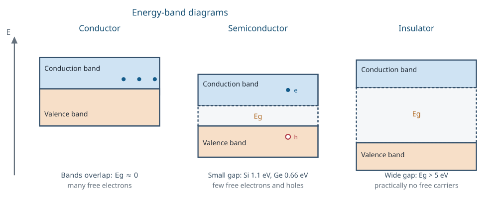
ઊર્જા-બેન્ડ મોડેલ ત્રણેય વર્ગના પદાર્થો વચ્ચેનો તફાવત સમજાવે છે. ઘન પદાર્થમાં ઇલેક્ટ્રોનની મંજૂર ઊર્જા બેન્ડ રૂપે હોય છે અને ભરેલા વેલેન્સ બેન્ડ તથા આગલા કન્ડક્શન બેન્ડ વચ્ચેના પ્રદેશને વર્જિત ઊર્જા ગેપ, Eg કહે છે. વહન એ વાત પર આધાર રાખે છે કે ઇલેક્ટ્રોન આ ગેપ કેટલી સહેલાઈથી પાર કરી શકે છે.
| ગુણધર્મ | વાહક | સેમિકન્ડક્ટર | અવાહક |
|---|---|---|---|
| ઊર્જા ગેપ Eg | ≈ 0; બેન્ડ એકબીજામાં ભળે છે | નાનો: 300 K પર Si માટે ≈ 1.1 eV અને Ge માટે 0.66 eV | ખૂબ મોટો: Eg > 5 eV (ડાયમંડ ≈ 5.5 eV) |
| બેન્ડની સ્થિતિ | કન્ડક્શન બેન્ડ અંશતઃ ભરેલો અથવા વેલેન્સ બેન્ડ સાથે ઓવરલેપ | 0 K પર વેલેન્સ બેન્ડ ભરેલો; બેન્ડ વચ્ચે નાનો ગેપ | વેલેન્સ બેન્ડ ભરેલો અને કન્ડક્શન બેન્ડ ખાલી; મોટો ગેપ |
| રૂમ તાપમાને મુક્ત વાહક | ખૂબ મોટી સંખ્યામાં મુક્ત ઇલેક્ટ્રોન | ઓછી સંખ્યામાં ઇલેક્ટ્રોન અને હોલ (ઇલેક્ટ્રોન–હોલ જોડી) | મુક્ત વાહક લગભગ નહીં |
| અવરોધકતા | ≈ 10−8 થી 10−6 Ω·m | ≈ 10−4 થી 104 Ω·m, ડોપિંગ પર આધારિત | ≈ 1012 થી 1020 Ω·m |
| અવરોધનો તાપમાન ગુણાંક | ધન: તાપમાન વધતાં અવરોધ વધે | ઋણ: તાપમાન વધતાં વાહકતા વધે | સિદ્ધાંતમાં ઋણ, પરંતુ ખૂબ ઊંચા ક્ષેત્રે બ્રેકડાઉન થાય |
| ઉદાહરણ | તાંબું, ચાંદી, એલ્યુમિનિયમ | સિલિકોન, જર્મેનિયમ, GaAs | કાચ, મીકા, રબર, ડાયમંડ |
વાહકમાં કન્ડક્શન બેન્ડમાં પહેલેથી ઇલેક્ટ્રોન હોય છે, તેથી થોડું વોલ્ટેજ લગાડતાં મોટો પ્રવાહ વહે છે. સેમિકન્ડક્ટરમાં ઉષ્મા-ઊર્જાથી થોડા ઇલેક્ટ્રોન નાનો ગેપ પાર કરે છે અને ડોપિંગ, પ્રકાશ કે ઉષ્માથી વાહકતા ઘણી વધારી શકાય છે. અવાહકમાં મોટા ગેપને કારણે કન્ડક્શન બેન્ડ ખાલી રહે છે, તેથી તે ફક્ત બ્રેકડાઉન આપતા ખૂબ ઊંચા ક્ષેત્રે વહન કરે છે.
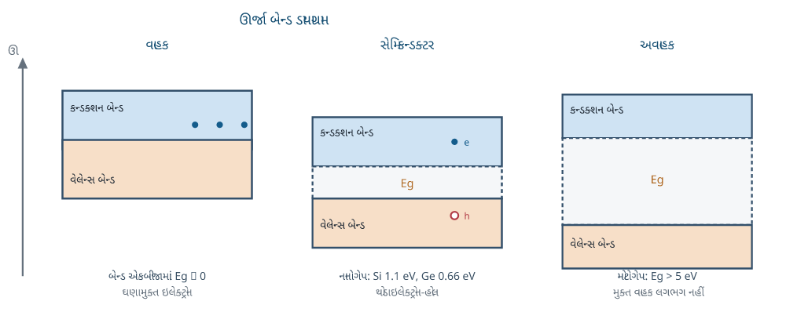
Q.1 (b) Explain construction and working of a PN-junction diode.4 marksQ.1 (b) · PN-જંક્શન ડાયોડની રચના અને કાર્ય સમજાવો.4 ગુણ
Construction: A PN-junction diode is formed in a single semiconductor crystal (usually silicon) by making one side P-type with a trivalent acceptor dopant (boron) and the other side N-type with a pentavalent donor dopant (phosphorus or arsenic), using alloying, diffusion or epitaxial growth. Metal contacts are provided on both sides and the assembly is enclosed in a package with two leads, anode (P) and cathode (N).
Formation of the depletion region: At the junction, holes diffuse from the P side into the N side and electrons diffuse from the N side into the P side. Each mobile carrier that leaves behind is replaced by a fixed ionised impurity: negative acceptor ions on the P side and positive donor ions on the N side. This narrow region, free of mobile carriers, is the depletion region. The exposed ions create an internal electric field directed from N to P, which opposes further diffusion. Equilibrium is reached when the diffusion current equals the field-driven drift current, leaving a barrier potential of about 0.7 V for silicon (0.3 V for germanium).
Working:
- No bias: diffusion and drift balance, so the net current is zero.
- Forward bias (P to positive, N to negative): the barrier is reduced, the depletion region becomes narrower and diffusion increases. Above the knee voltage (≈ 0.7 V for Si) the current rises rapidly and the diode conducts.
- Reverse bias (P to negative, N to positive): the barrier increases and the depletion region widens. Only a very small reverse saturation current due to minority carriers flows (nA for Si, µA for Ge). If the reverse voltage exceeds the breakdown voltage, avalanche or Zener breakdown occurs and a large current flows.
Thus the diode acts as a one-way valve: it conducts in forward bias and blocks in reverse bias.
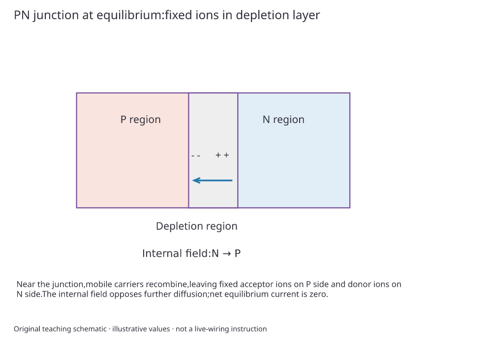
રચના: PN-જંક્શન ડાયોડ એક જ સેમિકન્ડક્ટર ક્રિસ્ટલ (સામાન્ય રીતે સિલિકોન)માં એક બાજુ P-પ્રકાર (ટ્રાઇવેલેન્ટ એક્સેપ્ટર ડોપન્ટ, બોરોન) અને બીજી બાજુ N-પ્રકાર (પેન્ટાવેલેન્ટ ડોનર ડોપન્ટ, ફોસ્ફરસ કે આર્સેનિક) બનાવીને, એલોઇંગ, ડિફ્યુઝન કે એપિટેક્સિયલ ગ્રોથ દ્વારા રચાય છે. બંને બાજુ ધાતુના સંપર્ક અને બે લીડ—એનોડ (P) તથા કેથોડ (N)—સાથે પેકેજમાં બંધ કરવામાં આવે છે.
ડિપ્લીશન પ્રદેશની રચના: જંક્શન પાસે હોલ P બાજુથી N બાજુ તરફ અને ઇલેક્ટ્રોન N બાજુથી P બાજુ તરફ ડિફ્યુઝ થાય છે. જે ગતિશીલ વાહક દૂર જાય છે તેની જગ્યાએ સ્થિર આયનિત અશુદ્ધિ રહી જાય છે: P બાજુએ ઋણ એક્સેપ્ટર આયન અને N બાજુએ ધન ડોનર આયન. ગતિશીલ વાહકોથી ખાલી આ સાંકડો પ્રદેશ ડિપ્લીશન પ્રદેશ કહેવાય છે. આ સ્થિર આયનો N થી P તરફ આંતરિક વિદ્યુત ક્ષેત્ર બનાવે છે, જે વધુ ડિફ્યુઝનનો વિરોધ કરે છે. જ્યારે ડિફ્યુઝન પ્રવાહ અને ક્ષેત્રથી થતો ડ્રિફ્ટ પ્રવાહ સમાન થાય ત્યારે સંતુલન આવે છે અને બેરિયર વિભવ રહે છે—સિલિકોન માટે આશરે 0.7 V (જર્મેનિયમ માટે 0.3 V).
કાર્ય:
- બાયસ વગર: ડિફ્યુઝન અને ડ્રિફ્ટ સંતુલિત હોય છે, તેથી ચોખ્ખો પ્રવાહ શૂન્ય હોય છે.
- ફોરવર્ડ બાયસ (P ધન અને N ઋણ): બેરિયર ઘટે છે, ડિપ્લીશન પ્રદેશ સાંકડો થાય છે અને ડિફ્યુઝન વધે છે. ની વોલ્ટેજ (Si માટે ≈ 0.7 V) પછી પ્રવાહ ઝડપથી વધે છે અને ડાયોડ વહન કરે છે.
- રિવર્સ બાયસ (P ઋણ અને N ધન): બેરિયર વધે છે અને ડિપ્લીશન પ્રદેશ પહોળો થાય છે. લઘુમતી વાહકોને કારણે ફક્ત ખૂબ નાનો રિવર્સ સેચ્યુરેશન પ્રવાહ વહે છે (Si માટે nA, Ge માટે µA). રિવર્સ વોલ્ટેજ બ્રેકડાઉન વોલ્ટેજ કરતાં વધે તો એવલાન્ચ કે ઝેનર બ્રેકડાઉન થાય અને મોટો પ્રવાહ વહે છે.
આમ ડાયોડ એક-દિશા વાલ્વ જેવો કાર્ય કરે છે: ફોરવર્ડ બાયસમાં વહન કરે છે અને રિવર્સ બાયસમાં અવરોધે છે.

Q.1 (c) Explain the full-wave bridge rectifier circuit with input and output waveforms.7 marksQ.1 (c) · ઇનપુટ/આઉટપુટ વેવફોર્મ સાથે ફુલ-વેવ બ્રિજ રેક્ટિફાયર પરિપથ સમજાવો.7 ગુણ
Purpose: A bridge rectifier converts an alternating voltage into a pulsating direct voltage using four diodes and does not need a centre-tapped transformer.
Circuit: The four diodes D1–D4 are connected in a bridge. The AC supply is applied across one diagonal of the bridge and the load RL is connected across the other diagonal. In every half-cycle two diodes are forward biased and the other two are reverse biased.
Working:
- Positive half-cycle (left AC node positive): diodes D1 and D4 conduct while D2 and D3 are off. Current flows from the source through D1, through the load from top to bottom, and back through D4 to the source.
- Negative half-cycle (right AC node positive): diodes D2 and D3 conduct while D1 and D4 are off. Current flows through D2, through the load in the same direction, and back through D3.
Because the load current keeps the same direction in both half-cycles, the output is a full-wave rectified voltage with two pulses per input cycle. The ripple frequency is therefore 2f, twice the supply frequency.
Waveforms: The input is a sine wave of peak value Vm. The output consists of successive positive humps of peak value Vm − 2Vd, where Vd is the drop of one conducting diode, because two diodes are in series in each conduction path.
| Quantity (ideal diode) | Expression |
|---|---|
| DC output voltage | Vdc = 2Vm/π ≈ 0.637 Vm |
| RMS output voltage | Vrms = Vm/√2 ≈ 0.707 Vm |
| Ripple factor | r = 0.482 |
| Peak inverse voltage per diode | PIV = Vm |
| Ripple frequency | 2f |
| Rectification efficiency | η = 81.2 % |
Advantages: no centre-tapped transformer, the full secondary voltage is used, PIV per diode is only Vm, better transformer utilisation and a smaller, cheaper transformer for the same DC output.
Disadvantages: four diodes are required and two diode drops reduce the output, which matters for very low output voltages.
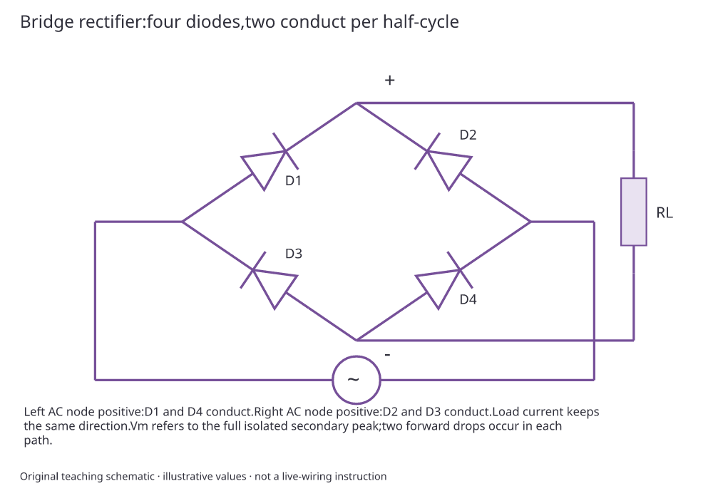

હેતુ: બ્રિજ રેક્ટિફાયર ચાર ડાયોડ વાપરીને પ્રત્યાવર્તી (AC) વોલ્ટેજને ધબકતા દિશ (DC) વોલ્ટેજમાં ફેરવે છે અને તેને સેન્ટર-ટેપ્ડ ટ્રાન્સફોર્મરની જરૂર નથી.
પરિપથ: ચાર ડાયોડ D1–D4 બ્રિજ રૂપે જોડાય છે. AC પુરવઠો બ્રિજના એક વિકર્ણ (diagonal) પર અને લોડ RL બીજા વિકર્ણ પર જોડાય છે. દરેક અર્ધચક્રમાં બે ડાયોડ ફોરવર્ડ બાયસ અને બાકીના બે રિવર્સ બાયસમાં હોય છે.
કાર્ય:
- ધન અર્ધચક્ર (ડાબો AC નોડ ધન): ડાયોડ D1 અને D4 વહન કરે છે, જ્યારે D2 અને D3 બંધ હોય છે. પ્રવાહ સ્ત્રોતથી D1 દ્વારા, લોડમાં ઉપરથી નીચે, અને D4 દ્વારા પાછો સ્ત્રોત તરફ વહે છે.
- ઋણ અર્ધચક્ર (જમણો AC નોડ ધન): ડાયોડ D2 અને D3 વહન કરે છે, જ્યારે D1 અને D4 બંધ હોય છે. પ્રવાહ D2 દ્વારા, લોડમાં એ જ દિશામાં, અને D3 દ્વારા પાછો વહે છે.
બંને અર્ધચક્રમાં લોડ પ્રવાહની દિશા એક જ રહેતી હોવાથી આઉટપુટ ફુલ-વેવ રેક્ટિફાઇડ વોલ્ટેજ મળે છે, જેમાં એક ઇનપુટ ચક્રમાં બે પલ્સ હોય છે. તેથી રિપલ ફ્રિક્વન્સી 2f, એટલે પુરવઠાની ફ્રિક્વન્સી કરતાં બમણી થાય છે.
વેવફોર્મ: ઇનપુટ Vm પીક મૂલ્યનું સાઇન વેવ છે. આઉટપુટમાં Vm − 2Vd પીક મૂલ્યવાળા ક્રમિક ધન કૂબડા મળે છે, જ્યાં Vd એક વહન કરતા ડાયોડનો ડ્રોપ છે, કારણ કે દરેક વહન માર્ગમાં બે ડાયોડ શ્રેણીમાં હોય છે.
| રાશિ (આદર્શ ડાયોડ) | સમીકરણ |
|---|---|
| DC આઉટપુટ વોલ્ટેજ | Vdc = 2Vm/π ≈ 0.637 Vm |
| RMS આઉટપુટ વોલ્ટેજ | Vrms = Vm/√2 ≈ 0.707 Vm |
| રિપલ ફેક્ટર | r = 0.482 |
| દરેક ડાયોડ પર પીક ઇન્વર્સ વોલ્ટેજ | PIV = Vm |
| રિપલ ફ્રિક્વન્સી | 2f |
| રેક્ટિફિકેશન કાર્યક્ષમતા | η = 81.2 % |
ફાયદા: સેન્ટર-ટેપ્ડ ટ્રાન્સફોર્મરની જરૂર નથી, આખું સેકન્ડરી વોલ્ટેજ વપરાય છે, દરેક ડાયોડ પર PIV ફક્ત Vm છે, ટ્રાન્સફોર્મરનો ઉપયોગ સારો થાય છે અને સમાન DC આઉટપુટ માટે નાનું તથા સસ્તું ટ્રાન્સફોર્મર પૂરતું છે.
ગેરફાયદા: ચાર ડાયોડની જરૂર પડે છે અને બે ડાયોડના ડ્રોપથી આઉટપુટ ઘટે છે, જે ખૂબ નીચા આઉટપુટ વોલ્ટેજ માટે મહત્વનું છે.

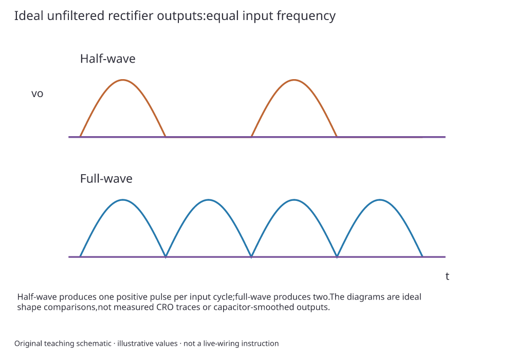
Q.1 (c) OR Explain construction and working of a Zener diode.7 marksQ.1 (c) OR · ઝેનર ડાયોડની રચના અને કાર્ય સમજાવો.7 ગુણ
Construction: A Zener diode is a silicon PN-junction diode that is specially designed to operate continuously in the reverse breakdown region. Both the P and N regions are heavily doped (written P+ and N+), so the depletion layer is extremely thin (of the order of 0.01 µm). Because the doping is heavy, breakdown occurs at a low and accurately controlled reverse voltage VZ. The device has two terminals, anode A and cathode K, and its symbol has a cathode bar with bent ends. Power diodes are mounted on a heat sink because they dissipate power in breakdown.
Working:
- Forward bias: the Zener diode behaves like an ordinary silicon diode, with a knee voltage of about 0.7 V.
- Reverse bias below VZ: only a small leakage current flows and the diode blocks.
- At reverse voltage VZ: breakdown takes place. The current rises very steeply while the voltage across the diode remains almost constant at VZ. A series resistor must limit the current so that the power dissipation PZ = VZ IZ stays within the rating; then the diode is not damaged and can work continuously.
For VZ below about 5 V the breakdown is mainly Zener breakdown (tunnelling of electrons across the very thin barrier) and it has a negative temperature coefficient. For VZ above about 6 V the breakdown is mainly avalanche breakdown and it has a positive temperature coefficient.
Characteristics: The reverse characteristic has a sharp knee at VZ; the dynamic resistance rz = ΔVZ/ΔIZ is small, so the voltage is almost constant over the rated current range from IZ(min) to IZ(max). The forward characteristic is the same as that of an ordinary diode.
Applications: shunt voltage regulator, stable voltage reference, clipper and limiter circuits, over-voltage protection and meter protection.
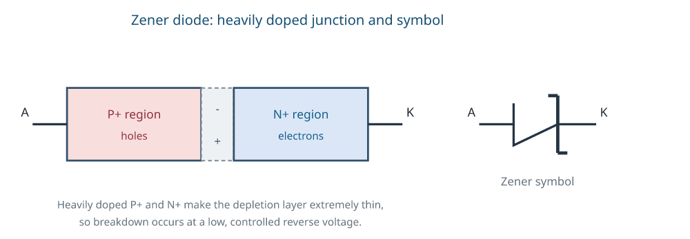
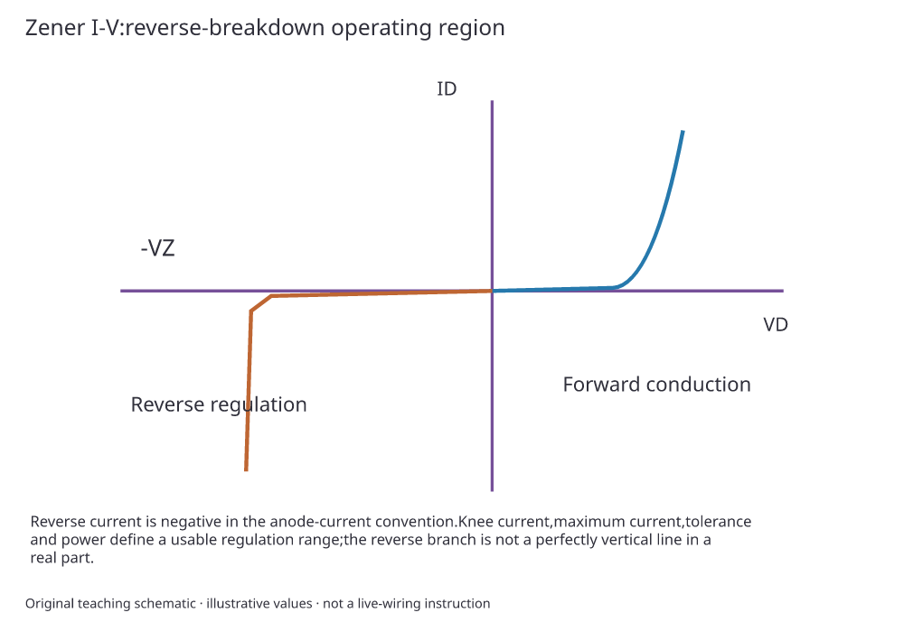
રચના: ઝેનર ડાયોડ એ સિલિકોન PN-જંક્શન ડાયોડ છે, જે રિવર્સ બ્રેકડાઉન વિસ્તારમાં સતત કાર્ય કરવા માટે ખાસ બનાવવામાં આવે છે. તેના P અને N બંને પ્રદેશ ભારે ડોપ કરેલા (P+ અને N+) હોય છે, તેથી ડિપ્લીશન સ્તર અતિ પાતળું (આશરે 0.01 µm ક્રમનું) બને છે. ભારે ડોપિંગને કારણે નીચા અને ચોક્કસ નિયંત્રિત રિવર્સ વોલ્ટેજ VZ પર બ્રેકડાઉન થાય છે. ઉપકરણમાં એનોડ A અને કેથોડ K એમ બે ટર્મિનલ હોય છે અને તેની સંજ્ઞામાં કેથોડની પટ્ટીના છેડા વળેલા હોય છે. પાવર ઝેનર ડાયોડને હીટ સિંક પર બેસાડવામાં આવે છે, કારણ કે બ્રેકડાઉનમાં તે શક્તિ વિસર્જિત કરે છે.
કાર્ય:
- ફોરવર્ડ બાયસ: ઝેનર ડાયોડ સામાન્ય સિલિકોન ડાયોડ જેવો વર્તે છે અને તેની ની વોલ્ટેજ આશરે 0.7 V હોય છે.
- VZ કરતાં ઓછા રિવર્સ બાયસમાં: ફક્ત થોડો લીકેજ પ્રવાહ વહે છે અને ડાયોડ અવરોધે છે.
- રિવર્સ વોલ્ટેજ VZ પર: બ્રેકડાઉન થાય છે. પ્રવાહ ખૂબ ઝડપથી વધે છે, જ્યારે ડાયોડ પરનું વોલ્ટેજ VZ પર લગભગ અચળ રહે છે. શ્રેણી રેઝિસ્ટર પ્રવાહ મર્યાદિત કરે છે જેથી શક્તિ-વિસર્જન PZ = VZ IZ રેટિંગમાં રહે; ત્યારે ડાયોડને નુકસાન થતું નથી અને તે સતત કાર્ય કરી શકે છે.
VZ આશરે 5 V કરતાં ઓછું હોય ત્યારે બ્રેકડાઉન મુખ્યત્વે ઝેનર બ્રેકડાઉન (અતિ પાતળા બેરિયરમાંથી ઇલેક્ટ્રોનનું ટનલિંગ) હોય છે અને તેનો તાપમાન ગુણાંક ઋણ હોય છે. VZ આશરે 6 V કરતાં વધુ હોય ત્યારે બ્રેકડાઉન મુખ્યત્વે એવલાન્ચ બ્રેકડાઉન હોય છે અને તેનો તાપમાન ગુણાંક ધન હોય છે.
લાક્ષણિકતાઓ: રિવર્સ લાક્ષણિકતામાં VZ પર તીવ્ર ની બને છે; ગતિશીલ અવરોધ rz = ΔVZ/ΔIZ નાનો હોય છે, તેથી IZ(min) થી IZ(max) સુધીના રેટેડ પ્રવાહ વિસ્તારમાં વોલ્ટેજ લગભગ અચળ રહે છે. ફોરવર્ડ લાક્ષણિકતા સામાન્ય ડાયોડ જેવી જ હોય છે.
ઉપયોગો: શંટ વોલ્ટેજ રેગ્યુલેટર, સ્થિર વોલ્ટેજ રેફરન્સ, ક્લિપર અને લિમિટર પરિપથ, ઓવર-વોલ્ટેજ સુરક્ષા તથા મીટર સુરક્ષા.
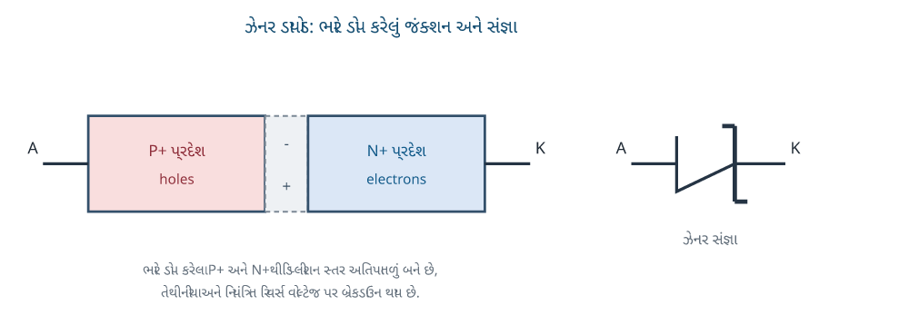

Q2 · Transistor basics, rectifier and filters
પ્ર.2 · ટ્રાન્ઝિસ્ટર મૂળભૂત, રેક્ટિફાયર અને ફિલ્ટર
Q.2 (a) Draw the symbols of NPN and PNP transistors.3 marksQ.2 (a) · NPN અને PNP ટ્રાન્ઝિસ્ટરની સંજ્ઞાઓ દોરો.3 ગુણ
A bipolar junction transistor has three terminals: emitter (E), base (B) and collector (C). In the circuit symbol the arrow is always drawn on the emitter and shows the direction of conventional current when the emitter–base junction is forward biased.
- NPN transistor: the arrow points outward, from base to emitter (memory aid: Not Pointing iN). The emitter is N-type, the base P-type and the collector N-type. Conventional current enters the collector and base and leaves through the emitter.
- PNP transistor: the arrow points inward, from emitter to base. The emitter is P-type, the base N-type and the collector P-type. Conventional current enters through the emitter and leaves through the base and collector.
The circle shown around the symbol represents the package and is optional; the arrow on the emitter is the essential identification mark. In both symbols the base is the vertical bar, the collector is the upper slanted lead and the emitter is the lower slanted lead carrying the arrow.
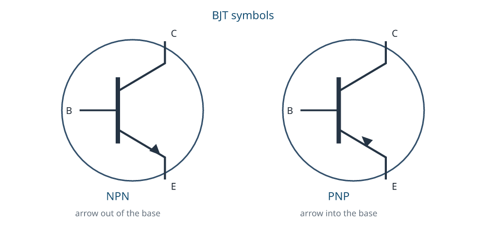
બાઇપોલર જંક્શન ટ્રાન્ઝિસ્ટરમાં ત્રણ ટર્મિનલ હોય છે: એમિટર (E), બેઝ (B) અને કલેક્ટર (C). પરિપથ સંજ્ઞામાં તીર હંમેશા એમિટર પર દોરાય છે અને એમિટર–બેઝ જંક્શન ફોરવર્ડ બાયસમાં હોય ત્યારે પરંપરાગત પ્રવાહની દિશા દર્શાવે છે.
- NPN ટ્રાન્ઝિસ્ટર: તીર બેઝથી એમિટર તરફ બહાર દિશામાં હોય છે (યાદ રાખવા: Not Pointing iN). એમિટર N-પ્રકાર, બેઝ P-પ્રકાર અને કલેક્ટર N-પ્રકારનું હોય છે. પરંપરાગત પ્રવાહ કલેક્ટર અને બેઝમાં પ્રવેશે છે અને એમિટરમાંથી બહાર નીકળે છે.
- PNP ટ્રાન્ઝિસ્ટર: તીર એમિટરથી બેઝ તરફ અંદર દિશામાં હોય છે. એમિટર P-પ્રકાર, બેઝ N-પ્રકાર અને કલેક્ટર P-પ્રકારનું હોય છે. પરંપરાગત પ્રવાહ એમિટરમાંથી પ્રવેશે છે અને બેઝ તથા કલેક્ટરમાંથી બહાર નીકળે છે.
સંજ્ઞા ફરતે દોરેલું વર્તુળ પેકેજ દર્શાવે છે અને તે વૈકલ્પિક છે; એમિટર પરનું તીર ઓળખ માટે આવશ્યક છે. બંને સંજ્ઞામાં બેઝ ઊભી પટ્ટી છે, કલેક્ટર ઉપરની તિરછી લીડ છે અને એમિટર નીચેની તિરછી લીડ છે, જેના પર તીર હોય છે.
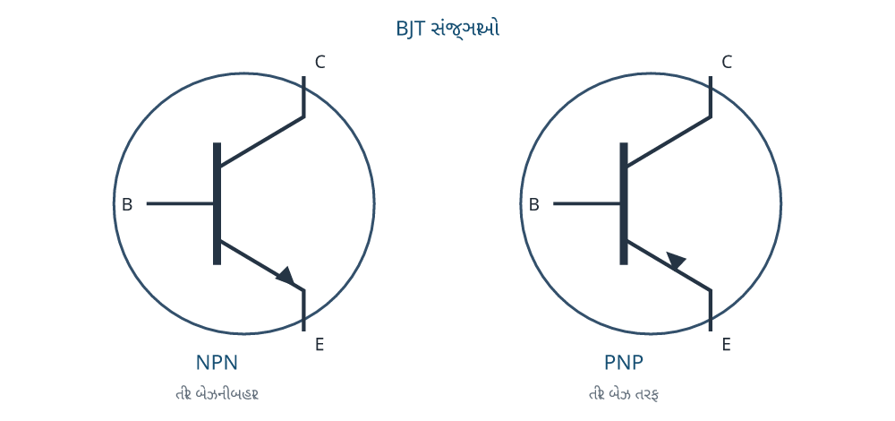
Q.2 (b) Derive the relationship between α and β in a transistor.4 marksQ.2 (b) · ટ્રાન્ઝિસ્ટરમાં α અને β વચ્ચેનો સંબંધ મેળવો.4 ગુણ
For a transistor, neglecting leakage current, the two current gains are defined as
α = IC / IE (common-base current gain) β = IC / IB (common-emitter current gain)
Applying Kirchhoff’s current law to the transistor, the emitter current is the sum of the collector and base currents:
IE = IC + IB
Substituting this in the definition of α:
α = IC / (IC + IB)
Divide the numerator and denominator by IC:
α = 1 / (1 + IB/IC) = 1 / (1 + 1/β) = β / (β + 1)
Rearranging for β:
α(β + 1) = β ⇒ αβ + α = β ⇒ α = β(1 − α) ⇒ β = α / (1 − α)
Hence the required relations are α = β/(1 + β) and β = α/(1 − α). Since α is always slightly less than unity, β is much larger than unity: a typical α of 0.98 gives β = 0.98/0.02 = 49. The two gains are therefore not independent; knowing either one fixes the other.
If leakage is included, IC = αIE + ICBO and IB = (1 − α)IE − ICBO, which leads to IC = βIB + (1 + β)ICBO; the ideal relation above is obtained when ICBO is neglected.
ટ્રાન્ઝિસ્ટર માટે લીકેજ પ્રવાહ અવગણીને બે કરંટ ગેઇન નીચે પ્રમાણે વ્યાખ્યાયિત થાય છે:
α = IC / IE (કોમન-બેઝ કરંટ ગેઇન) β = IC / IB (કોમન-એમિટર કરંટ ગેઇન)
ટ્રાન્ઝિસ્ટરને કિર્ચોફના કરંટ નિયમ લગાડતાં એમિટર પ્રવાહ એ કલેક્ટર અને બેઝ પ્રવાહનો સરવાળો થાય છે:
IE = IC + IB
આને αની વ્યાખ્યામાં મૂકતાં:
α = IC / (IC + IB)
અંશ અને છેદને IC વડે ભાગતાં:
α = 1 / (1 + IB/IC) = 1 / (1 + 1/β) = β / (β + 1)
હવે β માટે ગોઠવતાં:
α(β + 1) = β ⇒ αβ + α = β ⇒ α = β(1 − α) ⇒ β = α / (1 − α)
આમ માંગેલા સંબંધો α = β/(1 + β) અને β = α/(1 − α) મળે છે. α હંમેશા એક કરતાં થોડો ઓછો હોય છે, તેથી β એક કરતાં ઘણો મોટો થાય છે: α = 0.98 હોય તો β = 0.98/0.02 = 49. તેથી બંને ગેઇન સ્વતંત્ર નથી; એક જાણીતો હોય તો બીજો નક્કી થઈ જાય છે.
લીકેજ ગણવામાં આવે તો IC = αIE + ICBO અને IB = (1 − α)IE − ICBO, જેથી IC = βIB + (1 + β)ICBO મળે છે; ICBO અવગણતાં ઉપરનો આદર્શ સંબંધ મળે છે.
Q.2 (c) Explain the half-wave rectifier circuit with input and output waveforms.7 marksQ.2 (c) · ઇનપુટ/આઉટપુટ વેવફોર્મ સાથે હાફ-વેવ રેક્ટિફાયર પરિપથ સમજાવો.7 ગુણ
Purpose: A half-wave rectifier converts AC into pulsating DC using only one diode. It is the simplest rectifier circuit.
Circuit: The AC mains are applied to the primary of a step-down transformer. The secondary voltage is applied to a series diode D and the load resistance RL. The diode is the only path between the source and the load.
Working:
- Positive half-cycle: the upper end of the secondary is positive, so the anode of the diode is positive with respect to its cathode. The diode is forward biased, it conducts and the load current flows. The output voltage follows the input, less the diode drop of about 0.7 V.
- Negative half-cycle: the upper end becomes negative, the diode is reverse biased and it blocks. No current flows through the load and the output voltage is zero.
The output therefore consists of positive half-sine pulses separated by gaps during the negative half-cycles. The load current is unidirectional but highly pulsating; its ripple frequency equals the supply frequency f.
| Quantity (ideal diode, resistive load) | Expression |
|---|---|
| DC output voltage | Vdc = Vm/π ≈ 0.318 Vm |
| RMS output voltage | Vrms = Vm/2 |
| DC and RMS current | Idc = Im/π, Irms = Im/2 |
| Ripple factor | r = 1.21 |
| Peak inverse voltage | PIV = Vm |
| Ripple frequency | f |
| Rectification efficiency | η = 40.6 % |
| Transformer utilisation factor | TUF ≈ 0.287 |
Advantages: a single diode, simple and cheap circuit, low component count.
Disadvantages: low rectification efficiency, large ripple factor (1.21), low transformer utilisation, the DC component in the secondary can cause core saturation, and only half of the input is used.
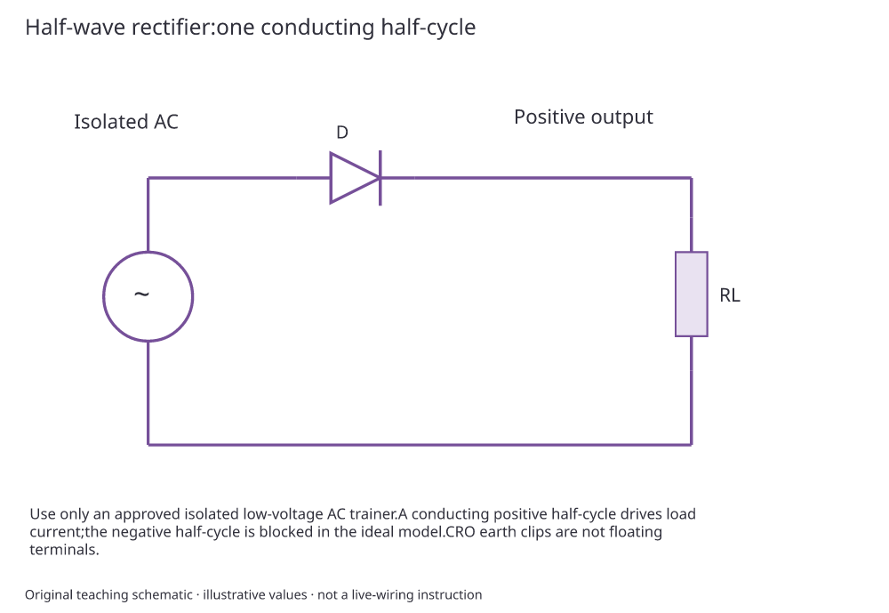
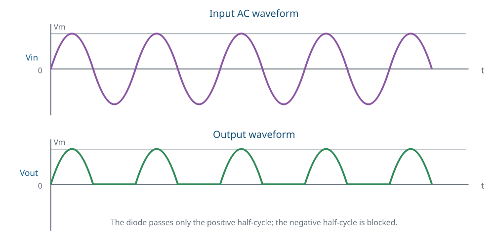
હેતુ: હાફ-વેવ રેક્ટિફાયર ફક્ત એક ડાયોડ વાપરીને ACને ધબકતા DCમાં ફેરવે છે. આ સૌથી સરળ રેક્ટિફાયર પરિપથ છે.
પરિપથ: AC મેઇન્સ સ્ટેપ-ડાઉન ટ્રાન્સફોર્મરના પ્રાઇમરી પર લગાડાય છે. સેકન્ડરી વોલ્ટેજ શ્રેણી ડાયોડ D અને લોડ અવરોધ RL પર લગાડાય છે. સ્ત્રોત અને લોડ વચ્ચે ડાયોડ એકમાત્ર માર્ગ છે.
કાર્ય:
- ધન અર્ધચક્ર: સેકન્ડરીનો ઉપરનો છેડો ધન બને છે, તેથી ડાયોડનો એનોડ કેથોડની સાપેક્ષે ધન થાય છે. ડાયોડ ફોરવર્ડ બાયસમાં હોય છે, વહન કરે છે અને લોડમાં પ્રવાહ વહે છે. આઉટપુટ વોલ્ટેજ ઇનપુટને અનુસરે છે, ફક્ત આશરે 0.7 V ડાયોડ ડ્રોપ જેટલું ઓછું રહે છે.
- ઋણ અર્ધચક્ર: ઉપરનો છેડો ઋણ બને છે, ડાયોડ રિવર્સ બાયસમાં આવે છે અને અવરોધે છે. લોડમાં પ્રવાહ વહેતો નથી અને આઉટપુટ વોલ્ટેજ શૂન્ય રહે છે.
તેથી આઉટપુટમાં ધન અર્ધ-સાઇન પલ્સ હોય છે અને ઋણ અર્ધચક્ર દરમિયાન ખાલી અંતરાલ રહે છે. લોડ પ્રવાહ એક દિશામાં હોય છે, પરંતુ ખૂબ ધબકતો હોય છે; તેની રિપલ ફ્રિક્વન્સી પુરવઠાની ફ્રિક્વન્સી f જેટલી હોય છે.
| રાશિ (આદર્શ ડાયોડ, અવરોધક લોડ) | સમીકરણ |
|---|---|
| DC આઉટપુટ વોલ્ટેજ | Vdc = Vm/π ≈ 0.318 Vm |
| RMS આઉટપુટ વોલ્ટેજ | Vrms = Vm/2 |
| DC અને RMS પ્રવાહ | Idc = Im/π, Irms = Im/2 |
| રિપલ ફેક્ટર | r = 1.21 |
| પીક ઇન્વર્સ વોલ્ટેજ | PIV = Vm |
| રિપલ ફ્રિક્વન્સી | f |
| રેક્ટિફિકેશન કાર્યક્ષમતા | η = 40.6 % |
| ટ્રાન્સફોર્મર ઉપયોગિતા ગુણાંક | TUF ≈ 0.287 |
ફાયદા: એક જ ડાયોડ, સરળ અને સસ્તો પરિપથ, ઓછા ઘટકો.
ગેરફાયદા: ઓછી રેક્ટિફિકેશન કાર્યક્ષમતા, મોટો રિપલ ફેક્ટર (1.21), ટ્રાન્સફોર્મરનો ઓછો ઉપયોગ, સેકન્ડરીમાં DC ઘટકથી કોર સેચ્યુરેશન થઈ શકે છે અને ઇનપુટનો ફક્ત અડધો ભાગ વપરાય છે.

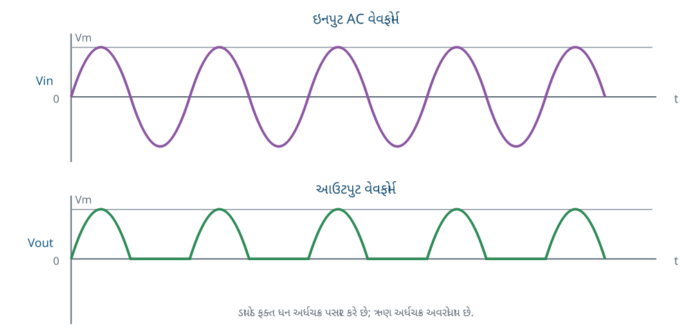
Q.2 (a) OR Define leakage current in a transistor.3 marksQ.2 (a) OR · ટ્રાન્ઝિસ્ટરમાં લીકેજ કરંટની વ્યાખ્યા આપો.3 ગુણ
Leakage current is the small current that flows through a reverse-biased junction of a transistor even when the junction is supposed to block current. It is caused mainly by minority carriers that are thermally generated in the neutral regions and swept across the reverse-biased junction by the barrier field, together with a small surface-leakage component.
Two leakage currents are specified for a transistor:
- ICBO — collector-to-base leakage current with the emitter open. It is the reverse saturation current of the collector–base junction and is due to minority carriers crossing that junction.
- ICEO — collector-to-emitter leakage current with the base open. It equals (1 + β)ICBO and is therefore much larger than ICBO.
Leakage current increases rapidly with temperature—it roughly doubles for every 10 °C rise in germanium devices—and it adds an unwanted component to the collector current: IC = βIB + (1 + β)ICBO. It is very small in silicon transistors (nA) compared with germanium (µA), and it causes drift of the operating point and thermal instability if the circuit does not provide stabilisation.
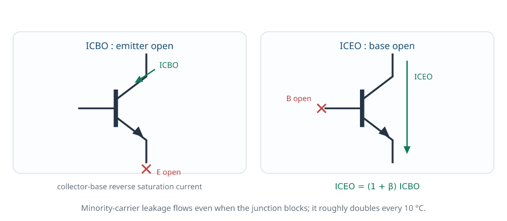
લીકેજ પ્રવાહ એ ટ્રાન્ઝિસ્ટરના રિવર્સ બાયસ જંક્શનમાંથી વહેતો નાનો પ્રવાહ છે, જ્યારે જંક્શન પ્રવાહ અવરોધવો જોઈએ. તે મુખ્યત્વે લઘુમતી વાહકોને કારણે હોય છે, જે તટસ્થ પ્રદેશોમાં ઉષ્મીય રીતે ઉત્પન્ન થઈને બેરિયર ક્ષેત્ર દ્વારા રિવર્સ બાયસ જંક્શન પાર કરે છે; તેમાં થોડો સપાટી-લીકેજ ઘટક પણ હોય છે.
ટ્રાન્ઝિસ્ટર માટે બે લીકેજ પ્રવાહ દર્શાવાય છે:
- ICBO — એમિટર ખુલ્લો હોય ત્યારે કલેક્ટરથી બેઝ તરફનો લીકેજ પ્રવાહ. તે કલેક્ટર–બેઝ જંક્શનનો રિવર્સ સેચ્યુરેશન પ્રવાહ છે અને તે જંક્શન પાર કરતા લઘુમતી વાહકોને કારણે હોય છે.
- ICEO — બેઝ ખુલ્લો હોય ત્યારે કલેક્ટરથી એમિટર તરફનો લીકેજ પ્રવાહ. તે (1 + β)ICBO જેટલો હોય છે અને તેથી ICBO કરતાં ઘણો મોટો હોય છે.
તાપમાન વધતાં લીકેજ પ્રવાહ ઝડપથી વધે છે—જર્મેનિયમ ઉપકరણોમાં દર 10 °C વધારા પર આશરે બમણો થાય છે—અને તે કલેક્ટર પ્રવાહમાં અનિચ્છનીય ઘટક ઉમેરે છે: IC = βIB + (1 + β)ICBO. સિલિકોન ટ્રાન્ઝિસ્ટરમાં તે ખૂબ નાનો (nA) હોય છે, જ્યારે જર્મેનિયમમાં (µA) પ્રમાણમાં મોટો હોય છે; પરિપથમાં સ્થિરીકરણ ન હોય તો તે કાર્યબિંદુના ડ્રિફ્ટ અને થર્મલ અસ્થિરતા લાવે છે.
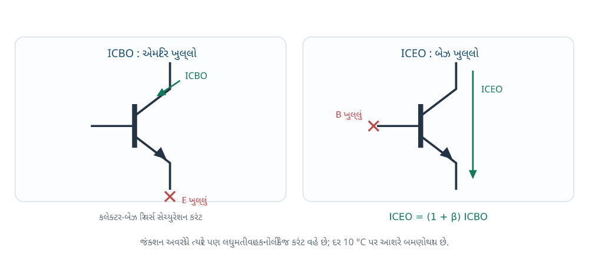
Q.2 (b) OR Explain the working of an NPN transistor.4 marksQ.2 (b) OR · NPN ટ્રાન્ઝિસ્ટરનું કાર્ય સમજાવો.4 ગુણ
An NPN transistor has a heavily doped N-type emitter, a very thin, lightly doped P-type base and a moderately doped N-type collector. It forms two junctions: the emitter–base junction JEB and the collector–base junction JCB.
Working in the active region: The emitter–base junction is forward biased and the collector–base junction is reverse biased.
- Because JEB is forward biased, the heavily doped emitter injects a large number of electrons into the base. The forward voltage also causes holes to enter the emitter from the base, but this component is small because the base is lightly doped.
- The base is made very thin and lightly doped, so only a small fraction of the injected electrons recombine with holes in the base. This recombination current is the small base current IB.
- Most of the electrons diffuse across the thin base and reach the edge of the collector–base junction. The reverse bias at JCB creates a strong field that sweeps these electrons into the collector, giving the large collector current IC.
Since the emitter current divides into the base and collector currents, Kirchhoff’s current law gives
IE = IB + IC
A small base current therefore controls a much larger collector current, which is the amplifying action of the transistor. Typical relations are IC = αIE = βIB, with α ≈ 0.95–0.99 and β = α/(1 − α).
Other regions: if both junctions are reverse biased the transistor is in cut-off (OFF). If both junctions are forward biased it is in saturation (fully ON). In both these regions it is used as a switch, while the active region is used for amplification.
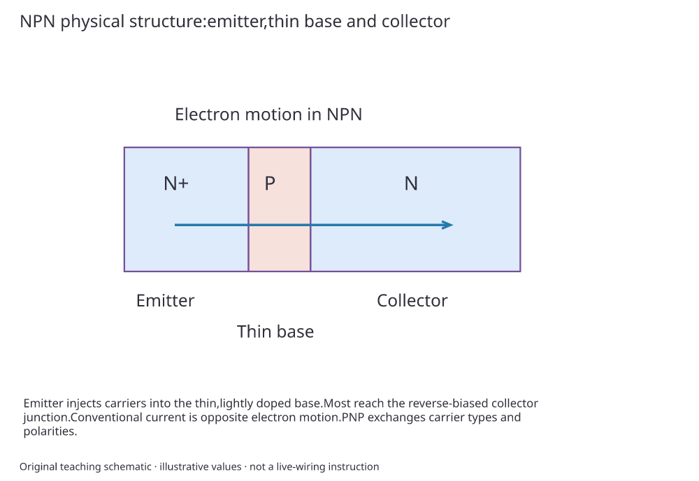
NPN ટ્રાન્ઝિસ્ટરમાં ભારે ડોપ કરેલો N-પ્રકાર એમિટર, અતિ પાતળો અને હળવો ડોપ કરેલો P-પ્રકાર બેઝ તથા મધ્યમ ડોપ કરેલો N-પ્રકાર કલેક્ટર હોય છે. તેમાં બે જંક્શન બને છે: એમિટર–બેઝ જંક્શન JEB અને કલેક્ટર–બેઝ જંક્શન JCB.
એક્ટિવ વિસ્તારમાં કાર્ય: એમિટર–બેઝ જંક્શન ફોરવર્ડ બાયસ અને કલેક્ટર–બેઝ જંક્શન રિવર્સ બાયસમાં હોય છે.
- JEB ફોરવર્ડ બાયસમાં હોવાથી ભારે ડોપ કરેલો એમિટર મોટી સંખ્યામાં ઇલેક્ટ્રોન બેઝમાં ઇન્જેક્ટ કરે છે. ફોરવર્ડ વોલ્ટેજને કારણે બેઝમાંથી થોડા હોલ એમિટરમાં પણ જાય છે, પરંતુ બેઝ હળવો ડોપ કરેલો હોવાથી આ ઘટક નાનો હોય છે.
- બેઝ અતિ પાતળો અને હળવો ડોપ કરેલો હોવાથી ઇન્જેક્ટ થયેલા થોડા જ ઇલેક્ટ્રોન બેઝમાંના હોલ સાથે પુનઃસંયોજન પામે છે. આ પુનઃસંયોજન પ્રવાહ એ નાનો બેઝ પ્રવાહ IB છે.
- મોટા ભાગના ઇલેક્ટ્રોન પાતળા બેઝમાંથી ડિફ્યુઝ થઈને કલેક્ટર–બેઝ જંક્શનની ધાર સુધી પહોંચે છે. JCB પરના રિવર્સ બાયસનું મજબૂત ક્ષેત્ર આ ઇલેક્ટ્રોનને કલેક્ટરમાં ખેંચી લે છે, જેથી મોટો કલેક્ટર પ્રવાહ IC મળે છે.
એમિટર પ્રવાહ બેઝ અને કલેક્ટર પ્રવાહમાં વહેંચાતો હોવાથી કિર્ચોફના કરંટ નિયમ પ્રમાણે
IE = IB + IC
તેથી નાનો બેઝ પ્રવાહ ઘણો મોટો કલેક્ટર પ્રવાહ નિયંત્રિત કરે છે, જે ટ્રાન્ઝિસ્ટરની એમ્પ્લિફાઇંગ ક્રિયા છે. સામાન્ય સંબંધો IC = αIE = βIB છે, જ્યાં α ≈ 0.95–0.99 અને β = α/(1 − α).
અન્ય વિસ્તારો: બંને જંક્શન રિવર્સ બાયસમાં હોય ત્યારે ટ્રાન્ઝિસ્ટર કટ-ઓફ (OFF) માં હોય છે. બંને જંક્શન ફોરવર્ડ બાયસમાં હોય ત્યારે તે સેચ્યુરેશન (પૂર્ણ ON) માં હોય છે. આ બંને વિસ્તારમાં તેનો સ્વિચ તરીકે ઉપયોગ થાય છે, જ્યારે એક્ટિવ વિસ્તાર એમ્પ્લિફિકેશન માટે વપરાય છે.

Q.2 (c) OR Define filters and explain C, L, LC and π filters.7 marksQ.2 (c) OR · ફિલ્ટરની વ્યાખ્યા આપો અને C, L, LC તથા π ફિલ્ટર સમજાવો.7 ગુણ
Definition: A filter (also called a smoothing circuit) is a network of reactive components—capacitors and inductors—connected between a rectifier and its load to reduce the alternating ripple content of the rectified output and to produce a steadier direct voltage. The capacitor shunts the AC ripple around the load, while the inductor opposes changes in current and therefore smooths the current.
1. Capacitor (C) filter: A large capacitor is connected in parallel with the load. The capacitor charges quickly to the peak value while the rectifier output rises, and then discharges slowly through RL while the rectifier output falls. This discharge fills the valleys between successive pulses and greatly reduces the ripple. The rectifier diodes conduct only in short pulses to recharge the capacitor, so the peak repetitive diode current is high. The ripple factor improves as C and RL increase; for a full-wave rectifier r ≈ 1/(4√3 f C RL) and for a half-wave rectifier r ≈ 1/(2√3 f C RL).
2. Inductor (L) filter—choke input: An inductor is connected in series with the load. Because the current through an inductor cannot change suddenly, the choke opposes the ripple and keeps the load current almost constant, so the output voltage is smooth. A bleeder resistor is usually connected across the capacitor/load to maintain a minimum current through the choke. This filter gives good regulation and low peak diode current, but the choke is bulky, heavy and costly.
3. LC filter (L-section): A series inductor and a shunt capacitor are combined. The choke blocks the ripple voltage and the capacitor bypasses the remaining ripple current, so the two elements give a much greater attenuation than either alone. The output is smoother and the circuit is widely used in power supplies; LC filters handle large currents well.
4. π (C-L-C) filter: A capacitor is connected across the rectifier output, followed by a series choke and a second capacitor across the load. The first capacitor removes a large part of the ripple and raises the DC voltage, and the L-C section removes most of the remaining ripple. This gives the best smoothing of the four circuits and is used for low-voltage, high-current supplies, but it has high peak diode current, larger size and higher cost.


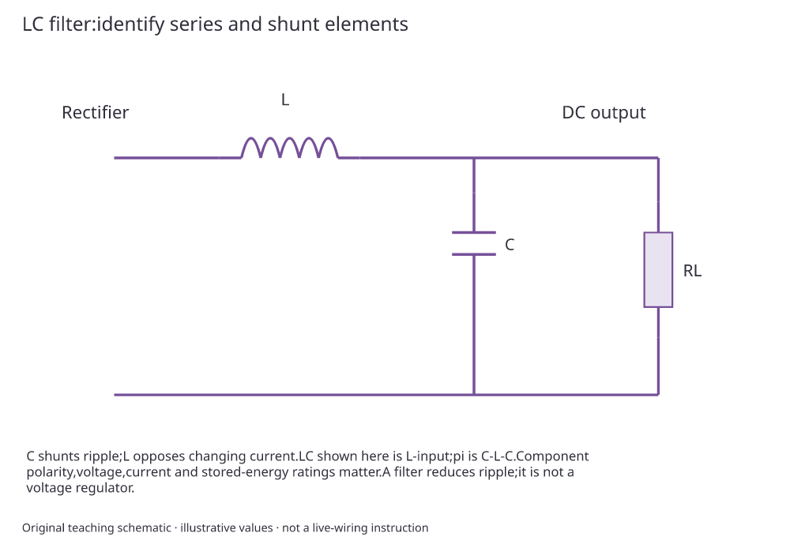

વ્યાખ્યા: ફિલ્ટર (સ્મૂથિંગ પરિપથ પણ કહેવાય) એ કેપેસિટર અને ઇન્ડક્ટર જેવા પ્રતિક્રિયાશીલ ઘટકોનું નેટવર્ક છે, જે રેક્ટિફાયર અને લોડ વચ્ચે જોડાય છે અને રેક્ટિફાઇડ આઉટપુટમાંના પ્રત્યાવર્તી રિપલને ઘટાડીને વધુ સ્થિર દિશ વોલ્ટેજ આપે છે. કેપેસિટર AC રિપલને લોડની આસપાસ શંટ કરે છે, જ્યારે ઇન્ડક્ટર પ્રવાહના ફેરફારનો વિરોધ કરીને પ્રવાહ સ્મૂથ કરે છે.
1. કેપેસિટર (C) ફિલ્ટર: મોટું કેપેસિટર લોડની સમાંતર જોડાય છે. રેક્ટિફાયરનું આઉટપુટ વધે ત્યારે કેપેસિટર ઝડપથી પીક મૂલ્ય સુધી ચાર્જ થાય છે અને પછી આઉટપુટ ઘટે ત્યારે RL દ્વારા ધીમે ધીમે ડિસ્ચાર્જ થાય છે. આ ડિસ્ચાર્જ ક્રમિક પલ્સ વચ્ચેની ખીણો ભરી દે છે અને રિપલ ઘણો ઘટાડે છે. કેપેસિટરને ફરી ચાર્જ કરવા રેક્ટિફાયર ડાયોડ ફક્ત ટૂંકી પલ્સમાં વહન કરે છે, તેથી પીક પુનરાવર્તી ડાયોડ પ્રવાહ મોટો હોય છે. C અને RL વધે તેમ રિપલ ફેક્ટર સુધરે છે; ફુલ-વેવ રેક્ટિફાયર માટે r ≈ 1/(4√3 f C RL) અને હાફ-વેવ માટે r ≈ 1/(2√3 f C RL).
2. ઇન્ડક્ટર (L) ફિલ્ટર—ચોક ઇનપુટ: ઇન્ડક્ટર લોડની શ્રેણીમાં જોડાય છે. ઇન્ડક્ટરમાંથી પસાર થતો પ્રવાહ અચાનક બદલાઈ શકતો નથી, તેથી ચોક રિપલનો વિરોધ કરે છે અને લોડ પ્રવાહ લગભગ અચળ રાખે છે; આથી આઉટપુટ વોલ્ટેજ સ્મૂથ મળે છે. ચોકમાંથી લઘુત્તમ પ્રવાહ જળવાય તે માટે સામાન્ય રીતે લોડ/કેપેસિટરની સમાંતર બ્લીડર રેઝિસ્ટર જોડાય છે. આ ફિલ્ટર સારું રેગ્યુલેશન અને ઓછો પીક ડાયોડ પ્રવાહ આપે છે, પરંતુ ચોક મોટું, ભારે અને ખર્ચાળ હોય છે.
3. LC ફિલ્ટર (L-સેક્શન): શ્રેણી ઇન્ડક્ટર અને શંટ કેપેસિટર સાથે જોડાય છે. ચોક રિપલ વોલ્ટેજને અવરોધે છે અને કેપેસિટર બાકીનો રિપલ પ્રવાહ બાયપાસ કરે છે, તેથી બંને ઘટકો મળીને એકલા કરતાં ઘણો વધુ ઘટાડો આપે છે. આઉટપુટ વધુ સ્મૂથ થાય છે અને આ પરિપથ પાવર સપ્લાયમાં વ્યાપકપણે વપરાય છે; LC ફિલ્ટર મોટા પ્રવાહ સારી રીતે સંભાળે છે.
4. π (C-L-C) ફિલ્ટર: રેક્ટિફાયર આઉટપુટ પર એક કેપેસિટર, પછી શ્રેણી ચોક અને લોડ પર બીજું કેપેસિટર જોડાય છે. પહેલું કેપેસિટર રિપલનો મોટો ભાગ દૂર કરે છે અને DC વોલ્ટેજ વધારે છે, જ્યારે L-C સેક્શન બાકીનો મોટો ભાગ દૂર કરે છે. ચારેયમાં આ સૌથી સારું સ્મૂથિંગ આપે છે અને નીચા વોલ્ટેજ, મોટા પ્રવાહના સપ્લાય માટે વપરાય છે, પરંતુ તેમાં પીક ડાયોડ પ્રવાહ વધુ, કદ મોટું અને ખર્ચ વધુ હોય છે.
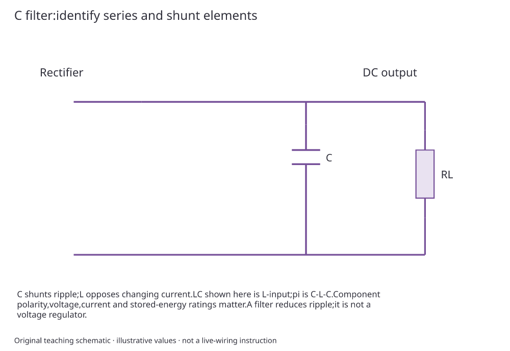
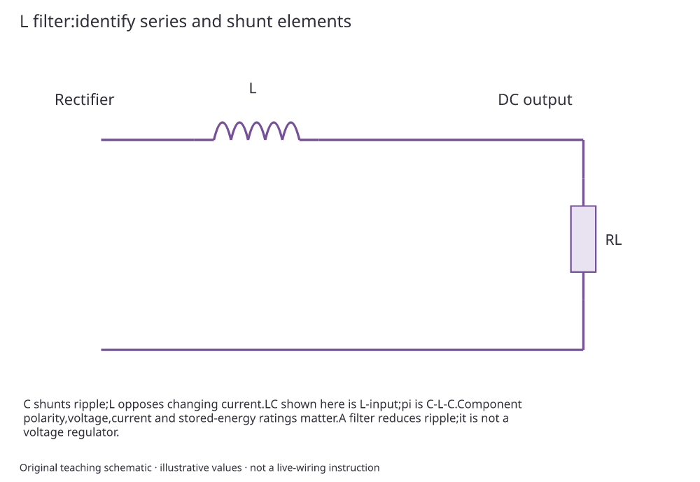

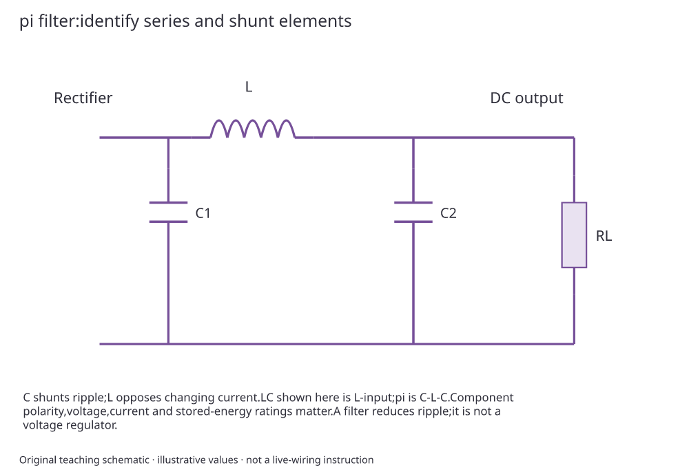
Q3 · Configurations, switching and biasing
પ્ર.3 · કન્ફિગરેશન, સ્વિચિંગ અને બાયસિંગ
Q.3 (a) Draw CE, CB and CC configurations of transistors.3 marksQ.3 (a) · ટ્રાન્ઝિસ્ટરના CE, CB અને CC કન્ફિગરેશન દોરો.3 ગુણ
A transistor is a three-terminal device, but an amplifier is a two-port network with an input port and an output port. One transistor terminal must therefore be common to both ports; the name of the configuration is taken from that common terminal.
- Common emitter (CE): input is applied between base and emitter, output is taken between collector and emitter, and the emitter is common. The output is inverted (180° phase shift); this configuration has high current and voltage gain and is used in audio amplifiers.
- Common base (CB): input is applied between emitter and base, output is taken between collector and base, and the base is common. Current gain is α < 1, voltage gain is high and there is no phase inversion; it is used in high-frequency/RF amplifiers.
- Common collector (CC): input is applied between base and collector, output is taken between emitter and collector, and the collector is common. Voltage gain is slightly less than one, current gain is (1 + β) and there is no phase inversion; it is used as an emitter follower, buffer or impedance-matching stage.
The circuits below show the terminal arrangement and the common (grounded) terminal of each configuration; the supply and bias components are omitted for clarity.
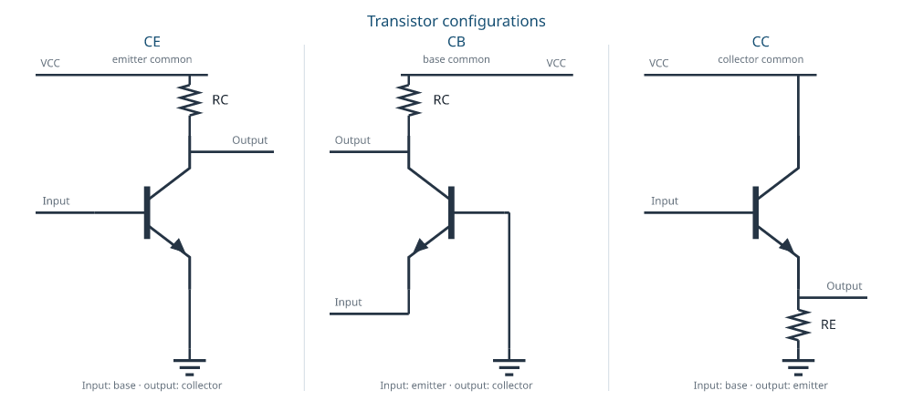
ટ્રાન્ઝિસ્ટર ત્રણ-ટર્મિનલ ઉપકરણ છે, પરંતુ એમ્પ્લિફાયર એ ઇનપુટ પોર્ટ અને આઉટપુટ પોર્ટ ધરાવતું દ્વિ-પોર્ટ નેટવર્ક છે. તેથી એક ટર્મિનલ બંને પોર્ટ માટે કોમન રાખવું પડે છે; તે કોમન ટર્મિનલ પરથી કન્ફિગરેશનનું નામ પડે છે.
- કોમન એમિટર (CE): ઇનપુટ બેઝ અને એમિટર વચ્ચે અને આઉટપુટ કલેક્ટર અને એમિટર વચ્ચે લેવાય છે; એમિટર કોમન હોય છે. આઉટપુટ ઊલટું (180° ફેઝ શિફ્ટ) મળે છે; આ કન્ફિગરેશનમાં કરંટ અને વોલ્ટેજ ગેઇન બંને ઊંચા હોય છે અને તે ઓડિયો એમ્પ્લિફાયરમાં વપરાય છે.
- કોમન બેઝ (CB): ઇનપુટ એમિટર અને બેઝ વચ્ચે અને આઉટપુટ કલેક્ટર અને બેઝ વચ્ચે લેવાય છે; બેઝ કોમન હોય છે. કરંટ ગેઇન α < 1, વોલ્ટેજ ગેઇન ઊંચો અને ફેઝ ઇન્વર્ઝન નથી; તે ઊંચી ફ્રિક્વન્સી/RF એમ્પ્લિફાયરમાં વપરાય છે.
- કોમન કલેક્ટર (CC): ઇનપુટ બેઝ અને કલેક્ટર વચ્ચે અને આઉટપુટ એમિટર અને કલેક્ટર વચ્ચે લેવાય છે; કલેક્ટર કોમન હોય છે. વોલ્ટેજ ગેઇન એક કરતાં થોડો ઓછો, કરંટ ગેઇન (1 + β) અને ફેઝ ઇન્વર્ઝન નથી; તે એમિટર ફોલોઅર, બફર કે ઇમ્પિડન્સ-મેચિંગ સ્ટેજ તરીકે વપરાય છે.
નીચેના પરિપથ દરેક કન્ફિગરેશનમાં ટર્મિનલની ગોઠવણી અને કોમન (ગ્રાઉન્ડ કરેલું) ટર્મિનલ દર્શાવે છે; સ્પષ્ટતા માટે પુરવઠા અને બાયસ ઘટકો દર્શાવ્યા નથી.
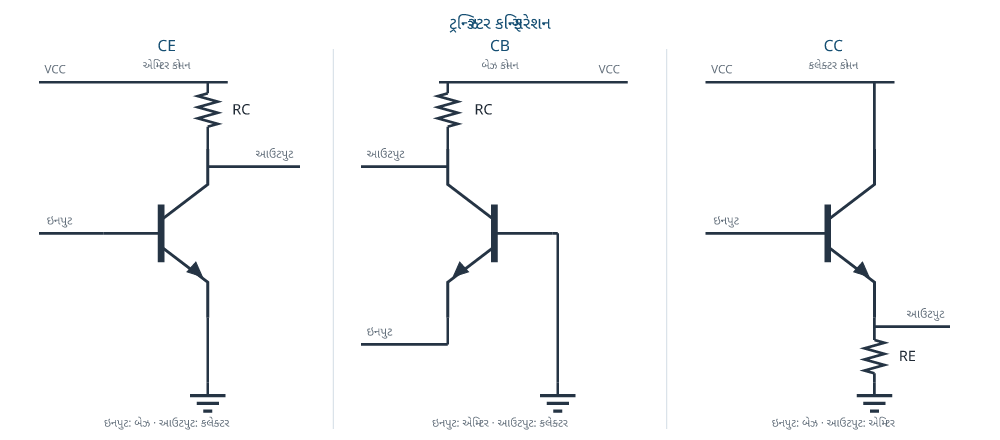
Q.3 (b) Define current gains α and β in a transistor.4 marksQ.3 (b) · ટ્રાન્ઝિસ્ટરમાં કરંટ ગેઇન α અને βની વ્યાખ્યા આપો.4 ગુણ
Common-base current gain (α): It is the ratio of the change in collector current to the change in emitter current, at constant collector–base voltage.
α = (ΔIC / ΔIE) at constant VCB ≈ IC / IE
Because IC is always slightly less than IE, α is slightly less than unity; its typical value is 0.95 to 0.99. It is also called hFB.
Common-emitter current gain (β): It is the ratio of the change in collector current to the change in base current, at constant collector–emitter voltage.
β = (ΔIC / ΔIB) at constant VCE ≈ IC / IB
Typical values are 20 to 500, so β is much larger than α. It is also called hFE. For a transistor, IE = IC + IB, and the two gains are related by
α = β / (1 + β) and β = α / (1 − α)
Both gains depend on the transistor type, operating current and temperature. When leakage is considered, IC = βIB + (1 + β)ICBO; β is the more commonly quoted gain because common-emitter amplifiers are used most often.
કોમન-બેઝ કરંટ ગેઇન (α): કલેક્ટર–બેઝ વોલ્ટેજ અચળ રાખીને કલેક્ટર પ્રવાહના ફેરફાર અને એમિટર પ્રવાહના ફેરફારના ગુણોત્તરને α કહે છે.
α = (ΔIC / ΔIE) અચળ VCB પર ≈ IC / IE
IC હંમેશા IE કરતાં થોડો ઓછો હોય છે, તેથી α એક કરતાં થોડો ઓછો હોય છે; તેનું સામાન્ય મૂલ્ય 0.95 થી 0.99 હોય છે. તેને hFB પણ કહેવાય છે.
કોમન-એમિટર કરંટ ગેઇન (β): કલેક્ટર–એમિટર વોલ્ટેજ અચળ રાખીને કલેક્ટર પ્રવાહના ફેરફાર અને બેઝ પ્રવાહના ફેરફારના ગુણોત્તરને β કહે છે.
β = (ΔIC / ΔIB) અચળ VCE પર ≈ IC / IB
તેનાં સામાન્ય મૂલ્યો 20 થી 500 હોય છે, તેથી β એ α કરતાં ઘણો મોટો હોય છે. તેને hFE પણ કહેવાય છે. ટ્રાન્ઝિસ્ટરમાં IE = IC + IB હોય છે અને બંને ગેઇન નીચે મુજબ સંબંધિત છે:
α = β / (1 + β) અને β = α / (1 − α)
બંને ગેઇન ટ્રાન્ઝિસ્ટરના પ્રકાર, કાર્યરત પ્રવાહ અને તાપમાન પર આધાર રાખે છે. લીકેજ ગણતાં IC = βIB + (1 + β)ICBO થાય છે; કોમન-એમિટર એમ્પ્લિફાયર વધુ વપરાતા હોવાથી સામાન્ય રીતે β વધુ દર્શાવાય છે.
Q.3 (c) Describe the transistor as a switch and explain its working.7 marksQ.3 (c) · ટ્રાન્ઝિસ્ટરને સ્વિચ તરીકે વર્ણવો અને તેનું કાર્ય સમજાવો.7 ગુણ
Principle: When a transistor is used as a switch it is driven between only two extreme regions—cut-off and saturation—and it is kept out of the active region except during the short transition. In cut-off it behaves as an open switch; in saturation it behaves as a closed switch.
Circuit: The common arrangement is the low-side NPN switch. The load (a relay coil, lamp, motor or resistor RC) is connected between +VCC and the collector, the emitter is connected to ground, and the control signal is applied to the base through the series resistor RB.
Working:
- OFF state (cut-off): when the input is low, the base–emitter junction is not forward biased (VBE < 0.7 V), so IB ≈ 0 and IC ≈ ICEO ≈ 0. There is almost no voltage drop across the load, so VCE ≈ VCC. The lamp or relay is off and the transistor is an open switch.
- ON state (saturation): when the input is high enough to give a base current larger than IC(sat)/β, the transistor is driven into saturation. Both junctions become forward biased, VCE falls to VCE(sat) ≈ 0.2 V and the collector current is limited mainly by the load: IC(sat) ≈ VCC/RC. The transistor is a closed switch.
Design: first find the load current, then the minimum base current and finally RB:
IC(sat) = (VCC − VCE(sat))/RC ≈ VCC/RC
IB(min) = IC(sat)/β(min)
IB = (2 to 10) × IB(min) (overdrive factor)
RB = (Vin − VBE)/IB
Example: VCC = 12 V, RC = 1.2 kΩ, so IC(sat) = 10 mA. For β(min) = 50, IB(min) = 0.2 mA. Choosing an overdrive factor of 5, IB = 1 mA; with Vin = 5 V and VBE = 0.7 V, RB = (5 − 0.7)/1 mA ≈ 4.3 kΩ, so a standard 3.9 kΩ or 4.7 kΩ resistor is selected.
Advantages and precautions: no moving contacts, very fast operation, small size, low control power and no arcing. For inductive loads a flyback diode must be connected across the load to protect the transistor from the induced voltage, and the switching times and power dissipation must be checked from the data sheet.
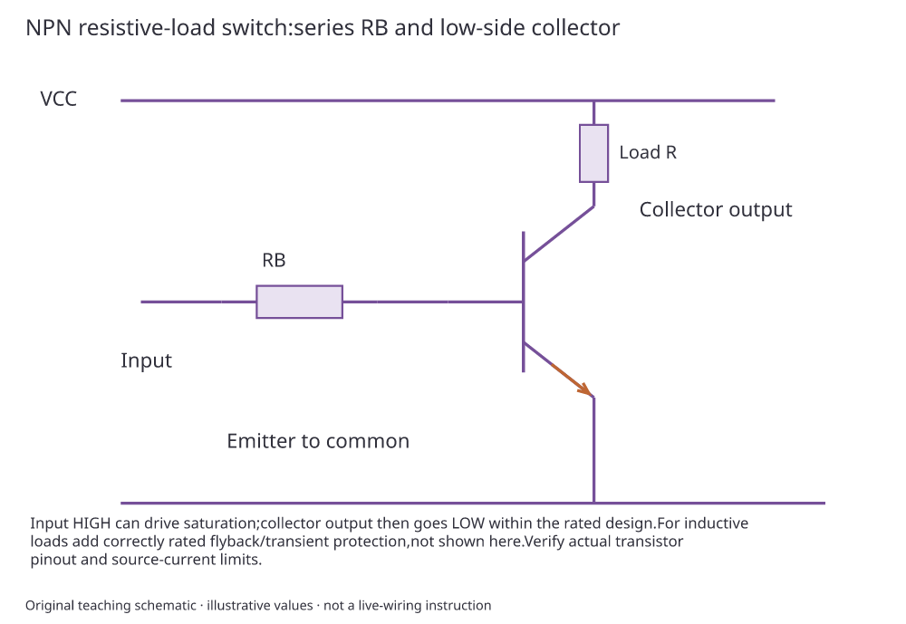
સિદ્ધાંત: ટ્રાન્ઝિસ્ટરને સ્વિચ તરીકે વાપરતી વખતે તેને ફક્ત બે આંતરિક વિસ્તારો—કટ-ઓફ અને સેચ્યુરેશન—વચ્ચે ચલાવવામાં આવે છે અને ટૂંકા સંક્રમણ સિવાય તેને એક્ટિવ વિસ્તારમાં રાખવામાં આવતો નથી. કટ-ઓફમાં તે ખુલ્લી સ્વિચ અને સેચ્યુરેશનમાં બંધ સ્વિચ જેવું વર્તે છે.
પરિપથ: સામાન્ય ગોઠવણી લો-સાઇડ NPN સ્વિચની છે. લોડ (રિલે કોઇલ, લેમ્પ, મોટર કે અવરોધ RC) +VCC અને કલેક્ટર વચ્ચે જોડાય છે, એમિટર ગ્રાઉન્ડ સાથે જોડાય છે અને નિયંત્રણ સિગ્નલ શ્રેણી રેઝિસ્ટર RB દ્વારા બેઝ પર લગાડાય છે.
કાર્ય:
- OFF સ્થિતિ (કટ-ઓફ): ઇનપુટ નીચું હોય ત્યારે બેઝ–એમિટર જંક્શન ફોરવર્ડ બાયસમાં હોતું નથી (VBE < 0.7 V), તેથી IB ≈ 0 અને IC ≈ ICEO ≈ 0. લોડ પર વોલ્ટેજ ડ્રોપ લગભગ નહીં હોવાથી VCE ≈ VCC. લેમ્પ કે રિલે બંધ રહે છે અને ટ્રાન્ઝિસ્ટર ખુલ્લી સ્વિચ જેવું વર્તે છે.
- ON સ્થિતિ (સેચ્યુરેશન): ઇનપુટ પૂરતું ઊંચું હોય અને બેઝ પ્રવાહ IC(sat)/β કરતાં વધુ મળે ત્યારે ટ્રાન્ઝિસ્ટર સેચ્યુરેશનમાં જાય છે. બંને જંક્શન ફોરવર્ડ બાયસ થાય છે, VCE ઘટીને VCE(sat) ≈ 0.2 V થાય છે અને કલેક્ટર પ્રવાહ મુખ્યત્વે લોડ દ્વારા મર્યાદિત થાય છે: IC(sat) ≈ VCC/RC. ટ્રાન્ઝિસ્ટર બંધ સ્વિચ જેવું વર્તે છે.
ડિઝાઇન: પહેલાં લોડ પ્રવાહ, પછી લઘુત્તમ બેઝ પ્રવાહ અને અંતે RB શોધો:
IC(sat) = (VCC − VCE(sat))/RC ≈ VCC/RC
IB(min) = IC(sat)/β(min)
IB = (2 થી 10) × IB(min) (ઓવરડ્રાઇવ ફેક્ટર)
RB = (Vin − VBE)/IB
ઉદાહરણ: VCC = 12 V, RC = 1.2 kΩ હોય તો IC(sat) = 10 mA. β(min) = 50 માટે IB(min) = 0.2 mA. ઓવરડ્રાઇવ ફેક્ટર 5 લેતાં IB = 1 mA; Vin = 5 V અને VBE = 0.7 V માટે RB = (5 − 0.7)/1 mA ≈ 4.3 kΩ, તેથી પ્રમાણભૂત 3.9 kΩ કે 4.7 kΩ રેઝિસ્ટર પસંદ કરાય.
ફાયદા અને સાવચેતી: ગતિશીલ સંપર્ક નથી, ખૂબ ઝડપી કાર્ય, નાનું કદ, ઓછી નિયંત્રણ શક્તિ અને આર્કિંગ નથી. ઇન્ડક્ટિવ લોડ માટે પ્રેરિત વોલ્ટેજથી ટ્રાન્ઝિસ્ટર બચાવવા લોડની સમાંતર ફ્લાયબેક ડાયોડ જોડવો જોઈએ અને સ્વિચિંગ સમય તથા શક્તિ-વિસર્જન ડેટાશીટમાંથી ચકાસવાં જોઈએ.

Q.3 (a) OR Draw input and output characteristics of a transistor in CE configuration.3 marksQ.3 (a) OR · CE કન્ફિગરેશનમાં ટ્રાન્ઝિસ્ટરની ઇનપુટ અને આઉટપુટ લાક્ષણિકતાઓ દોરો.3 ગુણ
Input characteristic: a graph of base current IB against base–emitter voltage VBE, with the collector–emitter voltage VCE held constant. The curve is similar to a forward-biased diode: IB is almost zero below about 0.5 V, then rises steeply after the knee at about 0.7 V for silicon. The input resistance is the reciprocal of the slope at the operating point:
ri = (ΔVBE / ΔIB) at constant VCE (typically 1–2 kΩ)
Output characteristic: a family of curves of collector current IC against collector–emitter voltage VCE, each drawn for a fixed value of base current IB. Three regions are seen:
- Saturation region (VCE below about 0.2–0.3 V): IC rises almost vertically with VCE and is limited by the external circuit.
- Active region (VCE > VCE(sat)): the curves are almost horizontal, so IC ≈ βIB and depends mainly on IB. A slight upward slope is caused by the Early effect.
- Breakdown region: at a sufficiently large VCE the collector junction breaks down and IC rises sharply.
The output resistance is the reciprocal of the slope of the active-region curve:
ro = (ΔVCE / ΔIC) at constant IB (typically tens of kΩ)
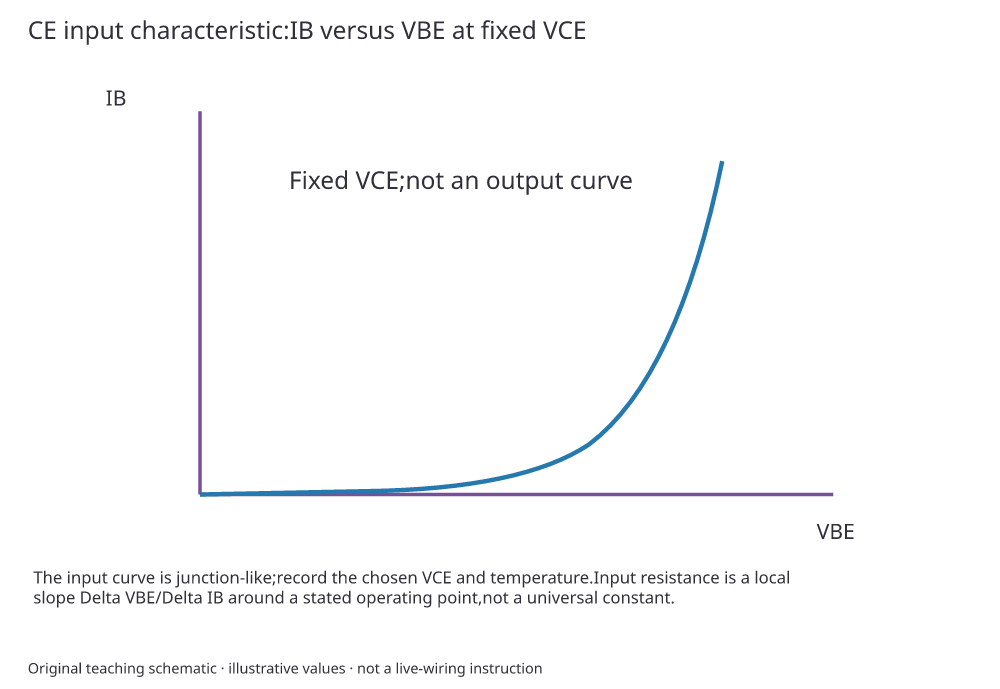
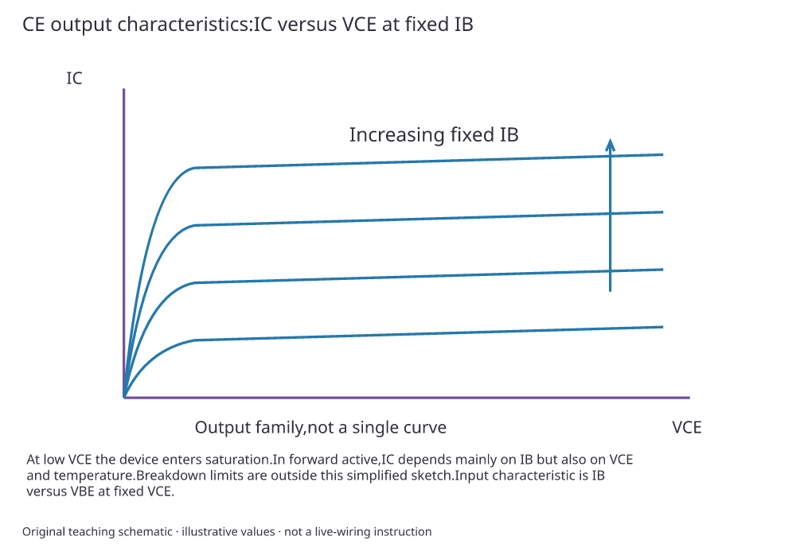
ઇનપુટ લાક્ષણિકતા: કલેક્ટર–એમિટર વોલ્ટેજ VCE અચળ રાખીને બેઝ પ્રવાહ IB વિરુદ્ધ બેઝ–એમિટર વોલ્ટેજ VBEનો આલેખ. વક્ર ફોરવર્ડ બાયસ ડાયોડ જેવો હોય છે: આશરે 0.5 V નીચે IB લગભગ શૂન્ય રહે છે અને સિલિકોન માટે આશરે 0.7 V ની ની પછી તે ઝડપથી વધે છે. ઇનપુટ અવરોધ એ કાર્યબિંદુ પરના ઢાળનો વ્યસ્ત છે:
ri = (ΔVBE / ΔIB) અચળ VCE પર (સામાન્ય રીતે 1–2 kΩ)
આઉટપુટ લાક્ષણિકતા: કલેક્ટર પ્રવાહ IC વિરુદ્ધ કલેક્ટર–એમિટર વોલ્ટેજ VCEના વક્રોનો સમૂહ, જેમાં દરેક વક્ર બેઝ પ્રવાહ IBના નિશ્ચિત મૂલ્ય માટે દોરાય છે. ત્રણ વિસ્તાર દેખાય છે:
- સેચ્યુરેશન વિસ્તાર (VCE આશરે 0.2–0.3 V કરતાં ઓછું): IC VCE સાથે લગભગ ઊભી રીતે વધે છે અને બહારના પરિપથથી મર્યાદિત થાય છે.
- એક્ટિવ વિસ્તાર (VCE > VCE(sat)): વક્રો લગભગ સમક્ષિતિજ હોય છે, તેથી IC ≈ βIB અને મુખ્યત્વે IB પર આધાર રાખે છે. થોડો ઉપરનો ઢાળ અર્લી ઇફેક્ટને કારણે હોય છે.
- બ્રેકડાઉન વિસ્તાર: પૂરતા મોટા VCE પર કલેક્ટર જંક્શન બ્રેકડાઉન થાય છે અને IC તીવ્ર વધે છે.
આઉટપુટ અવરોધ એ એક્ટિવ વિસ્તારના વક્રના ઢાળનો વ્યસ્ત છે:
ro = (ΔVCE / ΔIC) અચળ IB પર (સામાન્ય રીતે દસો kΩ)


Q.3 (b) OR Compare transistor configurations.4 marksQ.3 (b) OR · ટ્રાન્ઝિસ્ટર કન્ફિગરેશનોની તુલના કરો.4 ગુણ
The three configurations differ in which terminal is common, in their input and output resistances, and in their current and voltage gains. The comparison is summarised below; typical values are for a small-signal BJT.
| Parameter | Common emitter (CE) | Common base (CB) | Common collector (CC) |
|---|---|---|---|
| Common terminal | Emitter | Base | Collector |
| Input / output terminals | Base / collector | Emitter / collector | Base / emitter |
| Input resistance | Medium (≈ 1 kΩ) | Very low (≈ 20–100 Ω) | Very high (≈ 100 kΩ–1 MΩ) |
| Output resistance | Medium (≈ 50 kΩ) | Very high (≈ 1 MΩ) | Very low (≈ 50 Ω) |
| Current gain | High, β = 20–500 | Less than 1, α = 0.95–0.99 | High, (1 + β) |
| Voltage gain | High | High | Less than 1 |
| Power gain | Highest | Medium | Medium |
| Phase shift | 180° (output inverted) | 0° | 0° |
| Typical use | Audio and general-purpose amplifiers | High-frequency / RF amplifiers | Buffer, emitter follower, impedance matching |
Thus CE gives the highest power gain but inverts the signal, CB is suitable for high frequencies because of its very low input resistance, and CC is used where a high input impedance and a low output impedance are needed to drive a load without loading the previous stage.
ત્રણેય કન્ફિગરેશનમાં કયું ટર્મિનલ કોમન છે, ઇનપુટ અને આઉટપુટ અવરોધ કેટલા છે તથા કરંટ અને વોલ્ટેજ ગેઇન કેટલા છે તેમાં તફાવત પડે છે. નીચેનું કોષ્ટક સરખામણી દર્શાવે છે; મૂલ્યો નાના-સિગ્નલ BJT માટે સામાન્ય છે.
| પરિમાણ | કોમન એમિટર (CE) | કોમન બેઝ (CB) | કોમન કલેક્ટર (CC) |
|---|---|---|---|
| કોમન ટર્મિનલ | એમિટર | બેઝ | કલેક્ટર |
| ઇનપુટ / આઉટપુટ ટર્મિનલ | બેઝ / કલેક્ટર | એમિટર / કલેક્ટર | બેઝ / એમિટર |
| ઇનપુટ અવરોધ | મધ્યમ (≈ 1 kΩ) | ખૂબ ઓછો (≈ 20–100 Ω) | ખૂબ ઊંચો (≈ 100 kΩ–1 MΩ) |
| આઉટપુટ અવરોધ | મધ્યમ (≈ 50 kΩ) | ખૂબ ઊંચો (≈ 1 MΩ) | ખૂબ ઓછો (≈ 50 Ω) |
| કરંટ ગેઇન | ઊંચો, β = 20–500 | એક કરતાં ઓછો, α = 0.95–0.99 | ઊંચો, (1 + β) |
| વોલ્ટેજ ગેઇન | ઊંચો | ઊંચો | એક કરતાં ઓછો |
| પાવર ગેઇન | સૌથી ઊંચો | મધ્યમ | મધ્યમ |
| ફેઝ શિફ્ટ | 180° (આઉટપુટ ઊલટું) | 0° | 0° |
| સામાન્ય ઉપયોગ | ઓડિયો અને સામાન્ય એમ્પ્લિફાયર | ઊંચી ફ્રિક્વન્સી / RF એમ્પ્લિફાયર | બફર, એમિટર ફોલોઅર, ઇમ્પિડન્સ મેચિંગ |
આમ CE સૌથી વધુ પાવર ગેઇન આપે છે પરંતુ સિગ્નલ ઊલટું કરે છે, CB તેના ખૂબ ઓછા ઇનપુટ અવરોધને કારણે ઊંચી ફ્રિક્વન્સી માટે યોગ્ય છે, અને CC ત્યાં વપરાય છે જ્યાં પાછલા સ્ટેજ પર ભાર નાખ્યા વિના લોડ ચલાવવા માટે ઊંચો ઇનપુટ અવરોધ અને નીચો આઉટપુટ અવરોધ જોઈએ.
Q.3 (c) OR State different biasing methods of a transistor and explain any two of them.7 marksQ.3 (c) OR · ટ્રાન્ઝિસ્ટરની વિવિધ બાયસિંગ પદ્ધતિઓ જણાવો. તેમાંથી કોઈપણ બે સમજાવો.7 ગુણ
Need for biasing: Biasing establishes a suitable DC operating point (Q-point) in the active region so that the transistor amplifies the complete input signal without distortion, and it keeps that Q-point stable when the temperature or the transistor (β) changes.
Biasing methods:
- Fixed bias (base-resistor bias).
- Collector-to-base feedback bias.
- Emitter-stabilised bias (fixed bias with an emitter resistor).
- Voltage-divider (potential-divider) bias.
- Emitter-feedback bias (collector-feedback bias with an emitter resistor).
1. Fixed bias: A single resistor RB is connected from VCC to the base, with RC in the collector. The base current is set by VCC and RB:
IB = (VCC − VBE)/RB
IC = βIB
VCE = VCC − ICRC
It uses the fewest components and is simple to design, but IC is directly proportional to β, so the Q-point shifts when the transistor is replaced or when β changes with temperature. Leakage current adds to IC, and there is no negative feedback to oppose thermal runaway, so stability is poor.
2. Emitter-stabilised bias: An emitter resistor RE is added to the fixed-bias circuit. The base loop gives
VCC = IBRB + VBE + IERE with IE = (1 + β)IB
IB = (VCC − VBE) / [RB + (1 + β)RE]
VCE = VCC − IC(RC + RE)
Stabilisation: if the temperature or β causes IC to rise, the emitter voltage VE = IERE rises, so VBE = VB − VE falls and the base current falls. This negative feedback pulls IC back towards its original value. A larger RE gives better stability, but it also reduces the available output swing, so RE is often bypassed by a capacitor for AC signals.
The other methods (collector feedback and voltage divider) improve the stability further; the voltage-divider bias is discussed separately in Q.4 (b) OR.
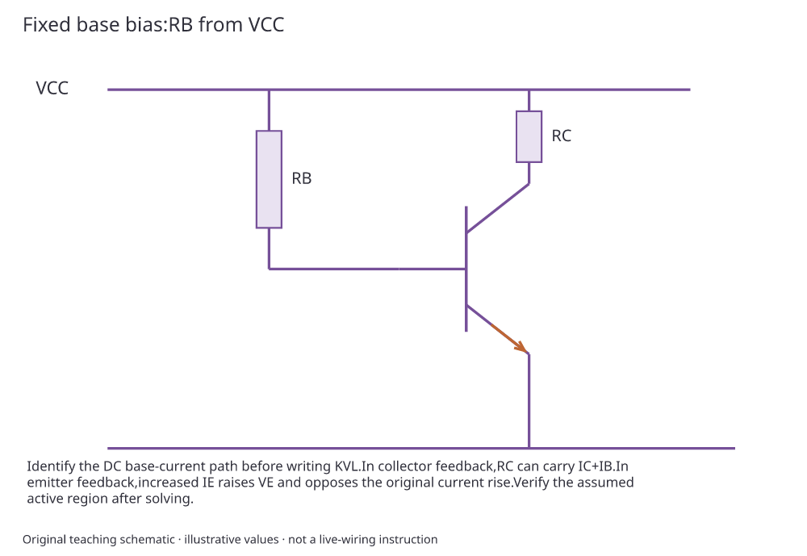
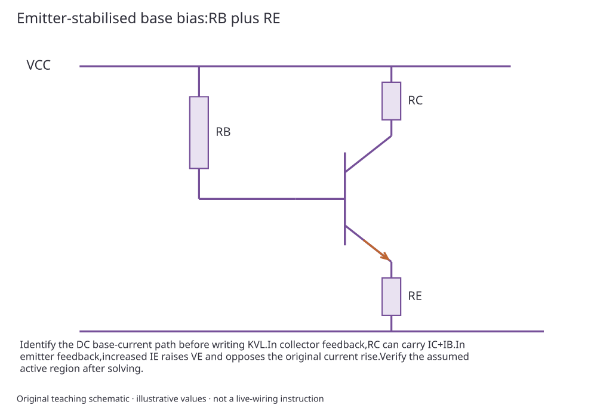
બાયસિંગની જરૂરિયાત: બાયસિંગ એક્ટિવ વિસ્તારમાં યોગ્ય DC કાર્યબિંદુ (Q-પોઇન્ટ) સ્થાપિત કરે છે, જેથી ટ્રાન્ઝિસ્ટર આખા ઇનપુટ સિગ્નલને વિકૃતિ વગર એમ્પ્લિફાય કરે, અને તાપમાન કે ટ્રાન્ઝિસ્ટર (β) બદલાય ત્યારે પણ તે Q-પોઇન્ટ સ્થિર રાખે છે.
બાયસિંગ પદ્ધતિઓ:
- ફિક્સ્ડ બાયસ (બેઝ-રેઝિસ્ટર બાયસ).
- કલેક્ટરથી બેઝ ફીડબેક બાયસ.
- એમિટર-સ્થિર બાયસ (એમિટર રેઝિસ્ટર સાથે ફિક્સ્ડ બાયસ).
- વોલ્ટેજ-ડિવાઇડર (પોટેન્શિયલ-ડિવાઇડર) બાયસ.
- એમિટર-ફીડબેક બાયસ (એમિટર રેઝિસ્ટર સાથે કલેક્ટર ફીડબેક બાયસ).
1. ફિક્સ્ડ બાયસ: VCC થી બેઝ સુધી એક જ રેઝિસ્ટર RB જોડાય છે અને કલેક્ટરમાં RC હોય છે. બેઝ પ્રવાહ VCC અને RB થી નક્કી થાય છે:
IB = (VCC − VBE)/RB
IC = βIB
VCE = VCC − ICRC
આમાં સૌથી ઓછા ઘટકો વપરાય છે અને ડિઝાઇન સરળ છે, પરંતુ IC સીધો βના પ્રમાણમાં હોય છે, તેથી ટ્રાન્ઝિસ્ટર બદલાય કે તાપમાન સાથે β બદલાય ત્યારે Q-પોઇન્ટ ખસી જાય છે. લીકેજ પ્રવાહ ICમાં ઉમેરાય છે અને થર્મલ રનઅવેનો વિરોધ કરતું ઋણ પ્રતિસાદ નથી, તેથી સ્થિરતા નબળી હોય છે.
2. એમિટર-સ્થિર બાયસ: ફિક્સ્ડ બાયસ પરિપથમાં એમિટર રેઝિસ્ટર RE ઉમેરાય છે. બેઝ લૂપ પરથી
VCC = IBRB + VBE + IERE જ્યાં IE = (1 + β)IB
IB = (VCC − VBE) / [RB + (1 + β)RE]
VCE = VCC − IC(RC + RE)
સ્થિરીકરણ: તાપમાન કે βને કારણે IC વધવા લાગે તો એમિટર વોલ્ટેજ VE = IERE વધે છે, તેથી VBE = VB − VE ઘટે છે અને બેઝ પ્રવાહ ઘટે છે. આ ઋણ પ્રતિસાદ ICને તેના મૂળ મૂલ્ય તરફ પાછો ખેંચે છે. RE મોટો હોય તો સ્થિરતા સારી મળે, પરંતુ ઉપલબ્ધ આઉટપુટ સ્વિંગ ઘટે છે, તેથી AC સિગ્નલ માટે REની સમાંતર કેપેસિટર ઘણી વાર જોડાય છે.
બાકીની પદ્ધતિઓ (કલેક્ટર ફીડબેક અને વોલ્ટેજ ડિવાઇડર) સ્થિરતા વધુ સુધારે છે; વોલ્ટેજ-ડિવાઇડર બાયસ પ્ર.4 (b) OR માં અલગથી સમજાવ્યું છે.


Q4 · DIAC, SCR, LDR, UJT and bias circuits
પ્ર.4 · DIAC, SCR, LDR, UJT અને બાયસ પરિપથ
Q.4 (a) Explain construction and working of a DIAC with its characteristics.3 marksQ.4 (a) · DIACની રચના અને કાર્યપદ્ધતિ તેની લાક્ષણિકતાઓ સાથે સમજાવો.3 ગુણ
Construction: A DIAC (diode for alternating current) is a two-terminal, symmetrical, multilayer semiconductor device used as a bidirectional trigger. It has two main terminals, MT1 and MT2 (also called A1 and A2) and no gate terminal. The structure is symmetrical and behaves like two Shockley diodes connected in antiparallel on a single silicon chip, so it has the same behaviour for both polarities of the applied voltage.
Working and characteristics:
- Below the breakover voltage the DIAC is in the high-resistance OFF state; only a small leakage current flows.
- When the magnitude of the applied voltage reaches the breakover voltage VBO (typically 30–40 V), the device switches rapidly into a low-resistance conducting state. The current is then limited only by the external circuit.
- It continues to conduct until the current falls below the holding current, when it returns to the blocking state.
- The V–I characteristic is symmetrical about the origin, with breakover at +VBO and −VBO.
Applications: triggering TRIACs in lamp dimmers and fan regulators, relaxation oscillators and pulse generators. The DIAC is a trigger device; it is not used to carry the main load current.
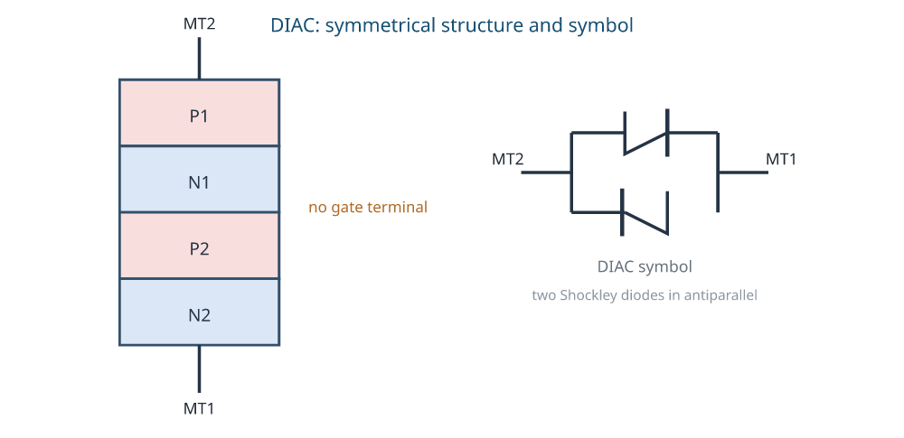
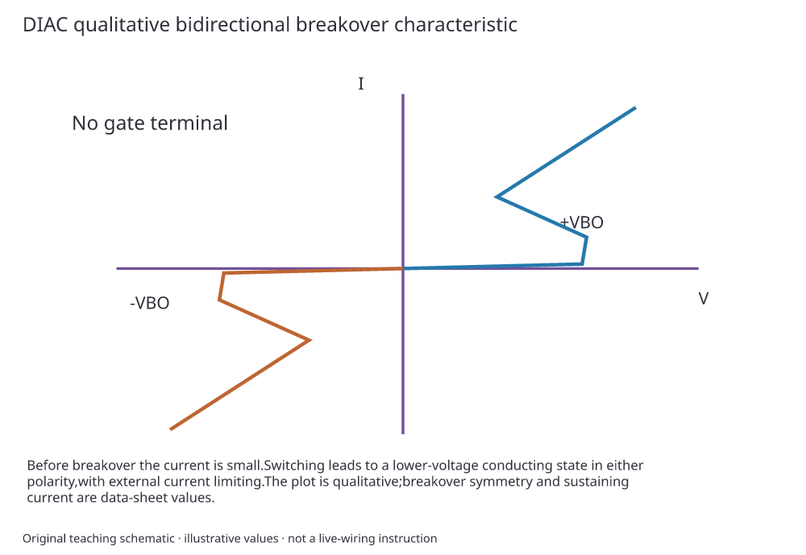
રચના: DIAC (diode for alternating current—પ્રત્યાવર્તી પ્રવાહ માટેનો ડાયોડ) એ બે-ટર્મિનલ, સમમિતીય, બહુ-સ્તરીય સેમિકન્ડક્ટર ઉપકરણ છે, જે દ્વિદિશ ટ્રિગર તરીકે વપરાય છે. તેમાં MT1 અને MT2 (A1 અને A2 પણ કહેવાય) એમ બે મુખ્ય ટર્મિનલ હોય છે અને ગેટ ટર્મિનલ હોતું નથી. તેની રચના સમમિતીય હોય છે અને એક જ સિલિકોન ચિપ પર એન્ટિપેરેલલમાં જોડાયેલા બે શોકલી ડાયોડ જેવું વર્તે છે, તેથી લગાડેલા વોલ્ટેજની બંને ધ્રુવતામાં તેનું વર્તન સમાન રહે છે.
કાર્ય અને લાક્ષણિકતાઓ:
- બ્રેકઓવર વોલ્ટેજ નીચે DIAC ઊંચા-અવરોધની OFF સ્થિતિમાં હોય છે; ફક્ત થોડો લીકેજ પ્રવાહ વહે છે.
- લગાડેલા વોલ્ટેજનું મૂલ્ય બ્રેકઓવર વોલ્ટેજ VBO (સામાન્ય રીતે 30–40 V) સુધી પહોંચે ત્યારે ઉપકરણ ઝડપથી નીચા-અવરોધના વહન સ્થિતિમાં જાય છે. પછી પ્રવાહ ફક્ત બહારના પરિપથ દ્વારા મર્યાદિત થાય છે.
- પ્રવાહ હોલ્ડિંગ કરંટ કરતાં નીચે ન જાય ત્યાં સુધી તે વહન ચાલુ રાખે છે; ત્યારપછી તે ફરી અવરોધક સ્થિતિમાં આવે છે.
- V–I લાક્ષણિકતા ઉદ્ગમ (origin) પર સમમિતીય હોય છે, જેમાં +VBO અને −VBO પર બ્રેકઓવર થાય છે.
ઉપયોગો: લેમ્પ ડિમર અને ફેન રેગ્યુલેટરમાં TRIACને ટ્રિગર કરવા, રિલેક્સેશન ઓસિલેટર અને પલ્સ જનરેટરમાં. DIAC એ ટ્રિગર ઉપકરણ છે; મુખ્ય લોડ પ્રવાહ વહન કરવા માટે તેનો ઉપયોગ થતો નથી.
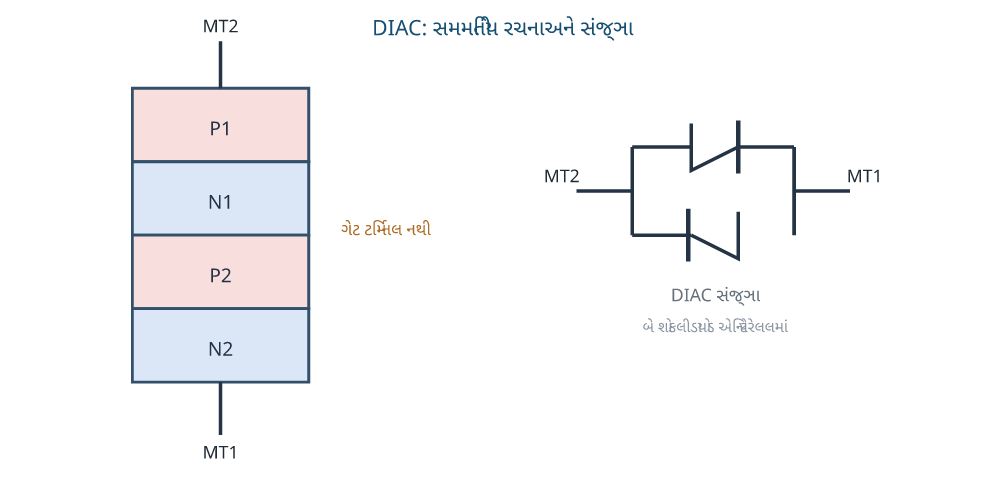

Q.4 (b) Write a short note on a transistor.4 marksQ.4 (b) · ટ્રાન્ઝિસ્ટર પર ટૂંકી નોંધ લખો.4 ગુણ
A bipolar junction transistor (BJT) is a three-terminal, three-region, two-junction semiconductor device in which a small base current controls a much larger collector current. It is called bipolar because both electrons and holes take part in conduction, and junction because it contains two PN junctions.
Construction: A BJT has three regions—the emitter (heavily doped, injects charge carriers), the base (very thin and lightly doped, controls the flow) and the collector (moderately doped with a larger area, collects the carriers). The two junctions are the emitter–base junction and the collector–base junction. The two types are NPN (N emitter, P base, N collector) and PNP (P emitter, N base, P collector).
Working: In the active region the emitter–base junction is forward biased and the collector–base junction is reverse biased. The emitter injects carriers into the thin base, only a small part recombines there, and most carriers are swept into the collector. Hence IE = IC + IB, IC = αIE = βIB, and α = β/(1 + β).
Operating regions: cut-off (both junctions reverse biased, used as an OFF switch), active (amplification) and saturation (both junctions forward biased, used as an ON switch).
Ratings and applications: important ratings are VCEO, IC(max), PD(max) and hFE. Transistors are used for amplification, switching, oscillators, voltage regulators and digital logic. Because a small input controls a large output, the BJT provides current and power gain and is a current-controlled device.
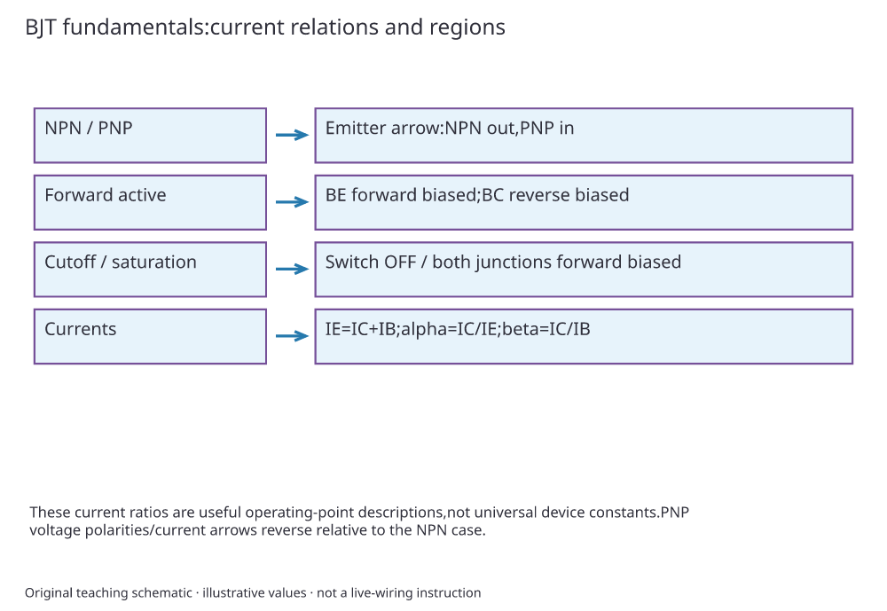
બાઇપોલર જંક્શન ટ્રાન્ઝિસ્ટર (BJT) એ ત્રણ-ટર્મિનલ, ત્રણ-પ્રદેશ અને બે-જંક્શન ધરાવતું સેમિકન્ડક્ટર ઉપકરણ છે, જેમાં નાનો બેઝ પ્રવાહ ઘણો મોટો કલેક્ટર પ્રવાહ નિયંત્રિત કરે છે. તેને બાઇપોલર કહેવાય છે કારણ કે વહનમાં ઇલેક્ટ્રોન અને હોલ બંને ભાગ લે છે, અને જંક્શન કારણ કે તેમાં બે PN જંક્શન હોય છે.
રચના: BJTમાં ત્રણ પ્રદેશ હોય છે—એમિટર (ભારે ડોપ કરેલો, ચાર્જ વાહક ઇન્જેક્ટ કરે), બેઝ (અતિ પાતળો અને હળવો ડોપ કરેલો, પ્રવાહ નિયંત્રિત કરે) અને કલેક્ટર (મધ્યમ ડોપ કરેલો અને મોટા ક્ષેત્રફળવાળો, વાહકોને એકત્ર કરે). બે જંક્શન એમિટર–બેઝ અને કલેક્ટર–બેઝ છે. બે પ્રકાર છે: NPN (N એમિટર, P બેઝ, N કલેક્ટર) અને PNP (P એમિટર, N બેઝ, P કલેક્ટર).
કાર્ય: એક્ટિવ વિસ્તારમાં એમિટર–બેઝ જંક્શન ફોરવર્ડ બાયસ અને કલેક્ટર–બેઝ જંક્શન રિવર્સ બાયસમાં હોય છે. એમિટર પાતળા બેઝમાં વાહકો ઇન્જેક્ટ કરે છે, તેમાંથી થોડા જ ભાગનું પુનઃસંયોજન થાય છે અને મોટા ભાગના વાહકો કલેક્ટરમાં ખેંચાય છે. તેથી IE = IC + IB, IC = αIE = βIB અને α = β/(1 + β).
કાર્ય વિસ્તારો: કટ-ઓફ (બંને જંક્શન રિવર્સ બાયસ, OFF સ્વિચ તરીકે), એક્ટિવ (એમ્પ્લિફિકેશન) અને સેચ્યુરેશન (બંને જંક્શન ફોરવર્ડ બાયસ, ON સ્વિચ તરીકે).
રેટિંગ અને ઉપયોગો: મહત્વનાં રેટિંગ VCEO, IC(max), PD(max) અને hFE છે. ટ્રાન્ઝિસ્ટર એમ્પ્લિફિકેશન, સ્વિચિંગ, ઓસિલેટર, વોલ્ટેજ રેગ્યુલેટર અને ડિજિટલ લોજિકમાં વપરાય છે. નાનો ઇનપુટ મોટા આઉટપુટને નિયંત્રિત કરતો હોવાથી BJT કરંટ અને પાવર ગેઇન આપે છે અને તે કરંટ-નિયંત્રિત ઉપકરણ છે.

Q.4 (c) Describe the SCR in terms of construction, working and characteristics.7 marksQ.4 (c) · રચના, કાર્યપદ્ધતિ અને લાક્ષણિકતાઓના સંદર્ભમાં SCRનું વર્ણન કરો.7 ગુણ
Construction: An SCR (silicon controlled rectifier) is a four-layer P1–N1–P2–N2 semiconductor device with three junctions J1, J2 and J3 and three terminals:
- Anode (A) connected to the outer P1 layer,
- Cathode (K) connected to the outer N2 layer,
- Gate (G) connected to the inner P2 layer near the cathode.
It is a three-terminal, four-layer, three-junction thyristor and is manufactured by diffusion on a silicon wafer. It conducts in one direction only and is a latching device.
Working:
- Forward blocking mode: when the anode is positive with respect to the cathode and no gate signal is applied, junctions J1 and J3 are forward biased but the middle junction J2 is reverse biased. Only a small leakage current flows and the device blocks the main current.
- Turn-on: if the forward voltage reaches the breakover voltage VBO, or a positive gate current is applied, breakdown of J2 is initiated. The gate current acts as base current for the NPN section (N1–P2–N2), which drives the PNP section (P1–N1–P2); each transistor supplies the base current of the other, giving a regenerative action. When α1 + α2 approaches unity the device latches, and then the anode current is limited only by the external load. In the ON state the voltage drop is only about 1–2 V.
- Gate loses control: once latched, the gate has no effect and the SCR remains ON. It is turned off only when the anode current falls below the holding current IH—by natural commutation at the AC zero crossing, by forced commutation in DC circuits, or by reversing the anode–cathode voltage.
- Reverse blocking mode: when the anode is negative, J1 and J3 are reverse biased and J2 is forward biased, so the device blocks in the reverse direction up to its reverse breakdown voltage.
Characteristics: The static V–I characteristic has three regions: forward blocking up to VBO, forward conduction with a low voltage drop, and reverse blocking. The breakover voltage decreases as the gate current increases (the gate characteristic curves shift to the left). The latching current IL is the minimum anode current needed to keep the SCR on immediately after turn-on, and the holding current IH is the minimum current needed to keep it on afterwards; IL > IH. Important ratings are VDRM/VRRM, IT(AV), di/dt, dv/dt and the gate ratings.
Applications: controlled rectifiers, AC voltage controllers, inverters, choppers, battery chargers, HVDC transmission, static switches and crowbar protection.

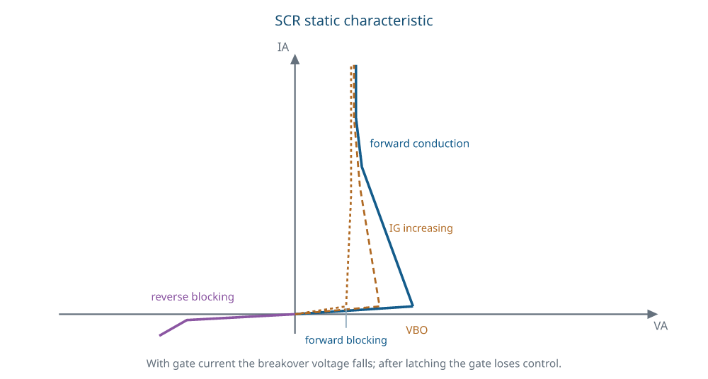
રચના: SCR (silicon controlled rectifier) એ ચાર-સ્તરીય P1–N1–P2–N2 સેમિકન્ડક્ટર ઉપકરણ છે, જેમાં J1, J2 અને J3 એમ ત્રણ જંક્શન તથા ત્રણ ટર્મિનલ હોય છે:
- એનોડ (A) બહારના P1 સ્તર સાથે જોડાયેલ,
- કેથોડ (K) બહારના N2 સ્તર સાથે જોડાયેલ,
- ગેટ (G) કેથોડ પાસેના અંદરના P2 સ્તર સાથે જોડાયેલ.
તે ત્રણ-ટર્મિનલ, ચાર-સ્તર, ત્રણ-જંક્શનવાળો થાઇરિસ્ટર છે અને સિલિકોન વેફર પર ડિફ્યુઝન દ્વારા બનાવાય છે. તે ફક્ત એક જ દિશામાં વહન કરે છે અને લેચિંગ ઉપકરણ છે.
કાર્ય:
- ફોરવર્ડ બ્લોકિંગ સ્થિતિ: એનોડ કેથોડની સાપેક્ષે ધન હોય અને ગેટ સિગ્નલ ન હોય ત્યારે J1 અને J3 ફોરવર્ડ બાયસ થાય છે, પરંતુ વચ્ચેનું જંક્શન J2 રિવર્સ બાયસ રહે છે. ફક્ત થોડો લીકેજ પ્રવાહ વહે છે અને ઉપકરણ મુખ્ય પ્રવાહ અવરોધે છે.
- ચાલુ થવું: ફોરવર્ડ વોલ્ટેજ બ્રેકઓવર વોલ્ટેજ VBO સુધી પહોંચે અથવા ધન ગેટ પ્રવાહ આપવામાં આવે ત્યારે J2નું બ્રેકડાઉન શરૂ થાય છે. ગેટ પ્રવાહ NPN ભાગ (N1–P2–N2) માટે બેઝ પ્રવાહ જેવો કાર્ય કરે છે, જે PNP ભાગ (P1–N1–P2)ને ચલાવે છે; દરેક ટ્રાન્ઝિસ્ટર બીજાને બેઝ પ્રવાહ પૂરો પાડે છે, જેથી પુનર્જનક (regenerative) ક્રિયા થાય છે. α1 + α2 એકની નજીક પહોંચે ત્યારે ઉપકરણ લેચ થાય છે અને પછી એનોડ પ્રવાહ ફક્ત બહારના લોડ દ્વારા મર્યાદિત થાય છે. ON સ્થિતિમાં વોલ્ટેજ ડ્રોપ ફક્ત આશરે 1–2 V હોય છે.
- ગેટનું નિયંત્રણ જતું રહે છે: લેચ થયા પછી ગેટની કોઈ અસર થતી નથી અને SCR ON રહે છે. તે ફક્ત ત્યારે બંધ થાય છે જ્યારે એનોડ પ્રવાહ હોલ્ડિંગ કરંટ IH કરતાં નીચે જાય—AC શૂન્ય ક્રોસિંગ પર કુદરતી કમ્યુટેશનથી, DC પરિપથમાં ફોર્સ્ડ કમ્યુટેશનથી, અથવા એનોડ–કેથોડ વોલ્ટેજ ઊલટાવવાથી.
- રિવર્સ બ્લોકિંગ સ્થિતિ: એનોડ ઋણ હોય ત્યારે J1 અને J3 રિવર્સ બાયસ તથા J2 ફોરવર્ડ બાયસ થાય છે, તેથી ઉપકરણ તેના રિવર્સ બ્રેકડાઉન વોલ્ટેજ સુધી રિવર્સ દિશામાં અવરોધે છે.
લાક્ષણિકતાઓ: સ્થિતિ V–I લાક્ષણિકતામાં ત્રણ વિસ્તાર હોય છે: VBO સુધી ફોરવર્ડ બ્લોકિંગ, ઓછા વોલ્ટેજ ડ્રોપ સાથે ફોરવર્ડ વહન અને રિવર્સ બ્લોકિંગ. ગેટ પ્રવાહ વધે તેમ બ્રેકઓવર વોલ્ટેજ ઘટે છે (ગેટ લાક્ષણિકતાના વક્રો ડાબી બાજુ ખસે છે). લેચિંગ કરંટ IL એ ચાલુ થયાની તરત પછી SCR ON રાખવા જરૂરી લઘુત્તમ એનોડ પ્રવાહ છે અને હોલ્ડિંગ કરંટ IH એ ત્યારપછી ON રાખવા જરૂરી લઘુત્તમ પ્રવાહ છે; IL > IH. મહત્વનાં રેટિંગ VDRM/VRRM, IT(AV), di/dt, dv/dt અને ગેટ રેટિંગ છે.
ઉપયોગો: નિયંત્રિત રેક્ટિફાયર, AC વોલ્ટેજ કંટ્રોલર, ઇન્વર્ટર, ચોપર, બેટરી ચાર્જર, HVDC ટ્રાન્સમિશન, સ્ટેટિક સ્વિચ અને ક્રોબાર પ્રોટેક્શન.
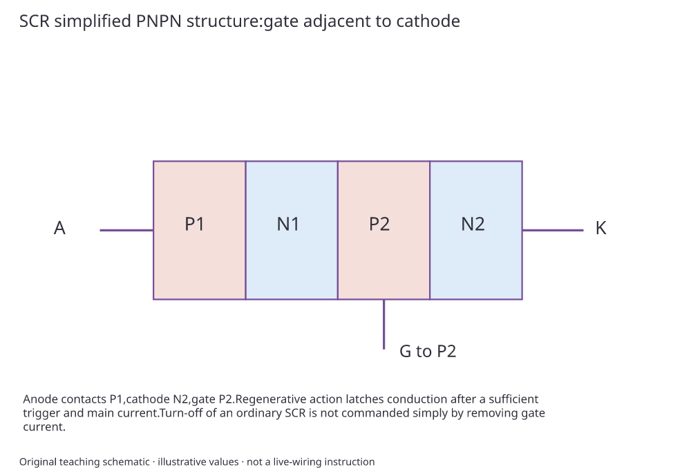
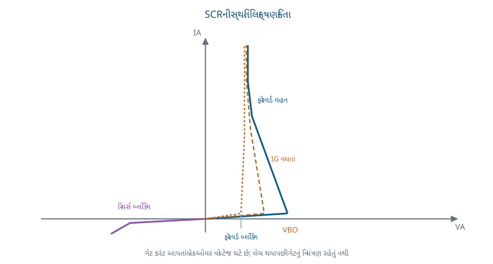
Q.4 (a) OR Write a short note on LDR.3 marksQ.4 (a) OR · LDR પર ટૂંકી નોંધ લખો.3 ગુણ
An LDR (light-dependent resistor), also called a photoresistor or photoconductor, is a two-terminal passive device whose resistance decreases when light falls on it.
Construction: A thin film of a photoconductive semiconductor such as cadmium sulphide (CdS), cadmium selenide (CdSe) or lead sulphide (PbS) is deposited in a zigzag or interdigitated pattern on an insulating ceramic or glass substrate. Two metal electrodes make contact with the film and a transparent protective coating covers the surface.
Working: In darkness there are very few free carriers, so the resistance is very high—typically about 1 MΩ or more. When light of suitable wavelength falls on the film, photons give their energy to the atoms and create electron–hole pairs. These additional carriers increase the conductivity, so the resistance falls to a few hundred ohms or a few kilohms. The resistance changes continuously with the illumination, and the LDR has no polarity.
Characteristics and limitations: The resistance–illumination curve is non-linear; on a log–log plot it is nearly a straight line with a negative slope. The response is relatively slow (milliseconds to tens of milliseconds), the resistance depends on temperature and on the previous light history (memory effect), and the tolerance is wide.
Applications: automatic street lights, light meters, burglar alarms, flame detectors, automatic brightness control, camera exposure meters and industrial counting. In a potential divider, the LDR converts light into a voltage that can drive a comparator or transistor.
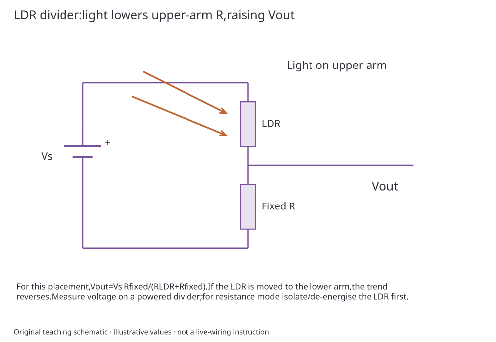
LDR (light-dependent resistor)—ફોટોરેઝિસ્ટર કે ફોટોકન્ડક્ટર પણ કહેવાય—એ બે-ટર્મિનલ નિષ્ક્રિય ઉપકરણ છે, જેના પર પ્રકાશ પડે ત્યારે તેનો અવરોધ ઘટે છે.
રચના: કેડમિયમ સલ્ફાઇડ (CdS), કેડમિયમ સેલેનાઇડ (CdSe) કે લેડ સલ્ફાઇડ (PbS) જેવા ફોટોકન્ડક્ટિવ સેમિકન્ડક્ટરનો પાતળો પડ કેરામિક કે કાચના અવાહક સબસ્ટ્રેટ પર ઝિગઝેગ (ઇન્ટરડિજિટેટેડ) આકારમાં જમા કરાય છે. બે ધાતુના ઇલેક્ટ્રોડ પડના સંપર્કમાં હોય છે અને પારદર્શક રક્ષણાત્મક કોટિંગ સપાટીને ઢાંકે છે.
કાર્ય: અંધારામાં મુક્ત વાહકો ખૂબ ઓછા હોય છે, તેથી અવરોધ ખૂબ ઊંચો—સામાન્ય રીતે આશરે 1 MΩ કે તેથી વધુ—હોય છે. યોગ્ય તરંગલંબાઈનો પ્રકાશ પડે ત્યારે ફોટોન પોતાની ઊર્જા પરમાણુઓને આપે છે અને ઇલેક્ટ્રોન–હોલ જોડી બને છે. આ વધારાના વાહકો વાહકતા વધારે છે, તેથી અવરોધ ઘટીને થોડા સો ઓહ્મ કે થોડા કિલો-ઓહ્મ થાય છે. પ્રકાશની તીવ્રતા સાથે અવરોધ સતત બદલાય છે અને LDRને ધ્રુવતા (polarity) હોતી નથી.
લાક્ષણિકતાઓ અને મર્યાદાઓ: અવરોધ–પ્રકાશની વક્ર રેખીય નથી; લોગ–લોગ આલેખમાં તે ઋણ ઢાળવાળી લગભગ સીધી રેખા હોય છે. તેનો પ્રતિસાદ પ્રમાણમાં ધીમો (મિલિસેકન્ડથી દસો મિલિસેકન્ડ) હોય છે, અવરોધ તાપમાન અને પહેલાંના પ્રકાશના ઇતિહાસ (મેમરી ઇફેક્ટ) પર આધાર રાખે છે અને ટોલરન્સ પણ મોટો હોય છે.
ઉપયોગો: ઓટોમેટિક સ્ટ્રીટ લાઇટ, લાઇટ મીટર, બર્ગલર એલાર્મ, જ્યોત ડિટેક્ટર, ઓટોમેટિક બ્રાઇટનેસ કંટ્રોલ, કેમેરાનું એક્સપોઝર મીટર અને ઔદ્યોગિક ગણતરી. પોટેન્શિયલ ડિવાઇડરમાં LDR પ્રકાશને વોલ્ટેજમાં ફેરવે છે, જે કમ્પેરેટર કે ટ્રાન્ઝિસ્ટરને ચલાવી શકે છે.

Q.4 (b) OR Describe potential divider biasing with a neat diagram and its advantages.4 marksQ.4 (b) OR · ચોખ્ખી આકૃતિ અને તેના ફાયદા સાથે પોટેન્શિયલ ડિવાઇડર બાયસનું વર્ણન કરો.4 ગુણ
Circuit: Two resistors R1 and R2 are connected as a voltage divider across VCC, and their junction supplies the base of the transistor. RC is connected in the collector and RE in the emitter. The base current is supplied from the divider, so this circuit is also called voltage-divider bias or self-bias.
Analysis: If the divider current is much larger than the base current (in practice I2 ≥ 10 IB), the base voltage is almost independent of IB:
VB = VCC · R2/(R1 + R2)
VE = VB − VBE
IE = VE/RE and IC ≈ IE
VCE = VCC − IC(RC + RE)
Stabilisation: if the temperature rises, or a transistor with a larger β is fitted, IC tends to increase. The emitter voltage VE = IERE then rises, so VBE = VB − VE falls and the base current is reduced. This negative feedback brings IC back, so the Q-point remains almost unchanged. The stability factor is
S = (1 + β)(1 + Rth/RE) / (1 + β + Rth/RE) where Rth = R1 ∥ R2
For Rth ≪ RE the factor approaches 1, which is the ideal case.
Advantages:
- Excellent stability of the Q-point against temperature and β variation.
- Only one supply is needed, and the circuit works for a wide range of β and for replacement transistors.
- Negative feedback through RE prevents thermal runaway.
- The design equations are simple and the circuit is very widely used.
Disadvantages: more components than fixed bias, lower input impedance, and the DC drop across RE reduces the available output swing; RE is therefore often bypassed by a capacitor for AC signals.
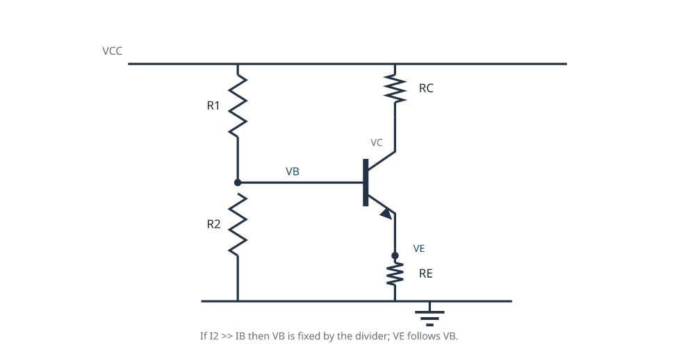
પરિપથ: R1 અને R2 એમ બે રેઝિસ્ટર VCC પર વોલ્ટેજ ડિવાઇડર રૂપે જોડાય છે અને તેમનું જંક્શન ટ્રાન્ઝિસ્ટરના બેઝને પુરવઠો આપે છે. કલેક્ટરમાં RC અને એમિટરમાં RE જોડાય છે. બેઝ પ્રવાહ ડિવાઇડરમાંથી મળે છે, તેથી આ પરિપથને વોલ્ટેજ-ડિવાઇડર બાયસ કે સેલ્ફ-બાયસ પણ કહેવાય છે.
વિશ્લેષણ: જો ડિવાઇડર પ્રવાહ બેઝ પ્રવાહ કરતાં ઘણો મોટો હોય (વ્યવહારમાં I2 ≥ 10 IB), તો બેઝ વોલ્ટેજ IB પર લગભગ આધાર રાખતો નથી:
VB = VCC · R2/(R1 + R2)
VE = VB − VBE
IE = VE/RE અને IC ≈ IE
VCE = VCC − IC(RC + RE)
સ્થિરીકરણ: તાપમાન વધે અથવા વધુ βવાળો ટ્રાન્ઝિસ્ટર લગાડાય ત્યારે IC વધવા લાગે છે. પછી એમિટર વોલ્ટેજ VE = IERE વધે છે, તેથી VBE = VB − VE ઘટે છે અને બેઝ પ્રવાહ ઘટે છે. આ ઋણ પ્રતિસાદ ICને પાછો લાવે છે, તેથી Q-પોઇન્ટ લગભગ અચળ રહે છે. સ્થિરતા ગુણાંક
S = (1 + β)(1 + Rth/RE) / (1 + β + Rth/RE) જ્યાં Rth = R1 ∥ R2
Rth ≪ RE હોય ત્યારે આ ગુણાંક 1 તરફ જાય છે, જે આદર્શ સ્થિતિ છે.
ફાયદા:
- તાપમાન અને βના ફેરફાર સામે Q-પોઇન્ટની ઉત્તમ સ્થિરતા.
- ફક્ત એક પુરવઠાની જરૂર, અને પરિપથ βના વિશાળ વિસ્તાર તથા ટ્રાન્ઝિસ્ટર બદલવા માટે પણ કાર્ય કરે છે.
- RE દ્વારા ઋણ પ્રતિસાદ થર્મલ રનઅવે અટકાવે છે.
- ડિઝાઇન સમીકરણો સરળ છે અને પરિપથ ખૂબ વ્યાપકપણે વપરાય છે.
ગેરફાયદા: ફિક્સ્ડ બાયસ કરતાં વધુ ઘટકો, ઓછો ઇનપુટ અવરોધ, અને RE પરના DC ડ્રોપથી ઉપલબ્ધ આઉટપુટ સ્વિંગ ઘટે છે; તેથી AC સિગ્નલ માટે REની સમાંતર ઘણી વાર કેપેસિટર જોડાય છે.
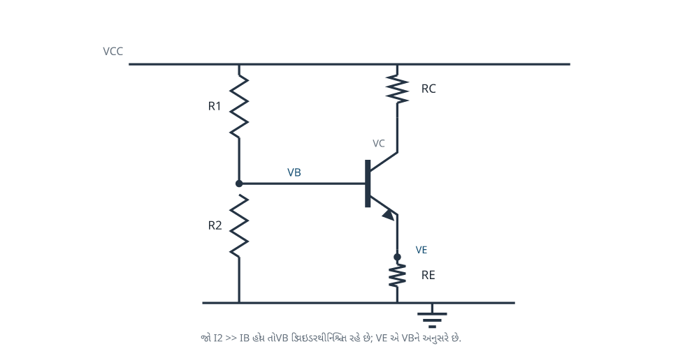
Q.4 (c) OR Draw the construction, symbol, equivalent circuit and characteristics of a UJT.7 marksQ.4 (c) OR · UJTની રચના, સંજ્ઞા, સમકક્ષ પરિપથ અને લાક્ષણિકતાઓ દોરો.7 ગુણ
Construction: A UJT (unijunction transistor) is a three-terminal, single-junction device. It consists of a lightly doped N-type silicon bar with two ohmic contacts at its ends, called base-1 (B1) and base-2 (B2). A heavily doped P-type emitter is diffused into the bar close to B2, forming one PN junction. The resistance between B1 and B2 with the emitter open is the inter-base resistance RBB = RB1 + RB2, typically 5–10 kΩ. The emitter is located at a fraction of this resistance called the intrinsic standoff ratio:
η = RB1 / (RB1 + RB2) (typically 0.5 to 0.8)
Symbol: the emitter is drawn as an arrow pointing into the N-type bar, with B1 and B2 at the two ends. Unlike a BJT, the UJT has no separate collector and it is not used as a linear amplifier.
Equivalent circuit: the emitter junction is represented by a diode in series with the variable resistance RB1 to B1, while RB2 connects the emitter point to B2. When the emitter current increases, conductivity modulation reduces RB1, which is the origin of the negative-resistance behaviour.
Characteristics (emitter characteristic VE against IE at fixed VBB):
- Cut-off region: for VE below the peak voltage the emitter diode is reverse biased, only a small leakage flows and the UJT is OFF.
- Peak point P: conduction begins when VE reaches VP = ηVBB + VD, where VD ≈ 0.7 V is the diode drop. The corresponding current is the peak current IP.
- Negative-resistance region: between the peak point P and the valley point V, an increase in emitter current causes a decrease in emitter voltage (dVE/dIE < 0), because the injected holes reduce RB1.
- Saturation region: beyond the valley point (VV ≈ 1–2 V, IV of a few mA) the device behaves like a forward-biased diode.
Applications: relaxation oscillator for generating sawtooth waves and timing pulses, triggering of SCRs and TRIACs, pulse generators and simple timing circuits.

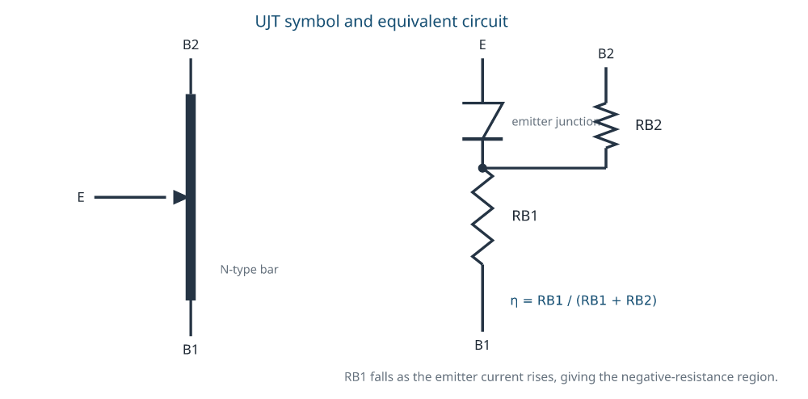
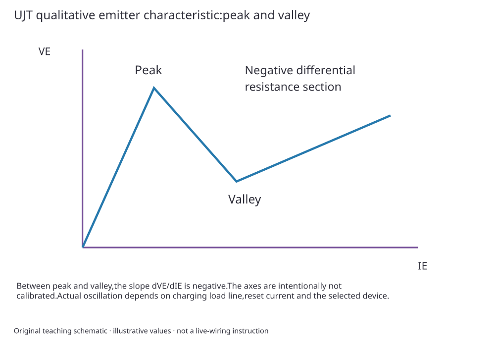
રચના: UJT (unijunction transistor) એ ત્રણ-ટર્મિનલ, એક-જંક્શન ઉપકરણ છે. તેમાં હળવો ડોપ કરેલો N-પ્રકારનો સિલિકોન બાર હોય છે, જેના બંને છેડે બેઝ-1 (B1) અને બેઝ-2 (B2) નામના બે ઓહ્મિક સંપર્ક હોય છે. બારમાં B2ની નજીક ભારે ડોપ કરેલો P-પ્રકાર એમિટર ડિફ્યુઝ કરાય છે, જેથી એક PN જંક્શન બને છે. એમિટર ખુલ્લો હોય ત્યારે B1 અને B2 વચ્ચેનો અવરોધ આંતર-બેઝ અવરોધ RBB = RB1 + RB2 કહેવાય છે, જે સામાન્ય રીતે 5–10 kΩ હોય છે. એમિટર આ અવરોધના જેટલા ભાગ પર સ્થિત છે તેને ઇન્ટ્રિન્સિક સ્ટેન્ડઓફ રેશિયો કહે છે:
η = RB1 / (RB1 + RB2) (સામાન્ય રીતે 0.5 થી 0.8)
સંજ્ઞા: એમિટરને N-પ્રકારના બાર તરફ દિશા ધરાવતા તીર રૂપે દોરાય છે અને બારના બે છેડે B1 તથા B2 હોય છે. BJTથી વિપરીત UJTમાં અલગ કલેક્ટર હોતું નથી અને તેનો રેખીય એમ્પ્લિફાયર તરીકે ઉપયોગ થતો નથી.
સમકક્ષ પરિપથ: એમિટર જંક્શનને B1 તરફના બદલાતા અવરોધ RB1 સાથે શ્રેણીમાંના ડાયોડથી દર્શાવાય છે, જ્યારે RB2 એમિટરના બિંદુને B2 સાથે જોડે છે. એમિટર પ્રવાહ વધે ત્યારે વાહકતા-મોડ્યુલેશનથી RB1 ઘટે છે, જે ઋણ-અવરોધ વર્તનનું કારણ છે.
લાક્ષણિકતાઓ (અચળ VBB પર એમિટર લાક્ષણિકતા VE વિરુદ્ધ IE):
- કટ-ઓફ વિસ્તાર: પીક વોલ્ટેજ નીચે VE હોય ત્યારે એમિટર ડાયોડ રિવર્સ બાયસમાં હોય છે, ફક્ત થોડો લીકેજ પ્રવાહ વહે છે અને UJT OFF રહે છે.
- પીક બિંદુ P: VE એ VP = ηVBB + VD સુધી પહોંચે ત્યારે વહન શરૂ થાય છે, જ્યાં VD ≈ 0.7 V ડાયોડ ડ્રોપ છે. તેને અનુરૂપ પ્રવાહ પીક પ્રવાહ IP છે.
- ઋણ-અવરોધ વિસ્તાર: પીક બિંદુ P અને વેલી બિંદુ V વચ્ચે એમિટર પ્રવાહ વધતાં એમિટર વોલ્ટેજ ઘટે છે (dVE/dIE < 0), કારણ કે ઇન્જેક્ટ થયેલા હોલ RB1 ઘટાડે છે.
- સેચ્યુરેશન વિસ્તાર: વેલી બિંદુ પછી (VV ≈ 1–2 V, IV થોડા mA) ઉપકરણ ફોરવર્ડ બાયસ ડાયોડ જેવું વર્તે છે.
ઉપયોગો: સોટૂથ વેવ અને ટાઇમિંગ પલ્સ માટે રિલેક્સેશન ઓસિલેટર, SCR અને TRIACને ટ્રિગર કરવા, પલ્સ જનરેટર અને સરળ ટાઇમિંગ પરિપથ.
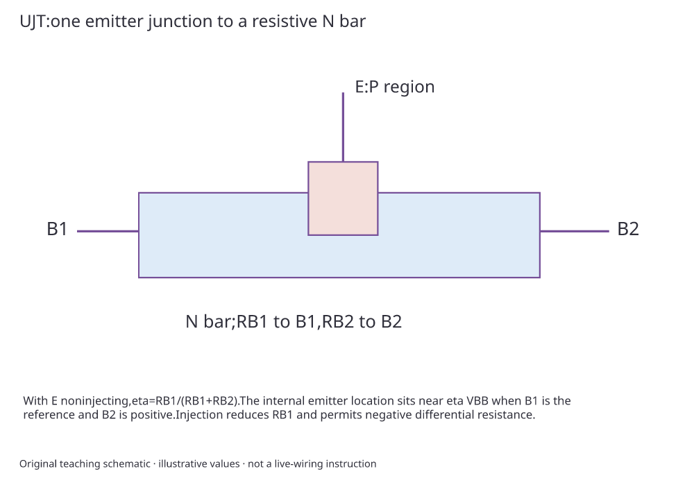
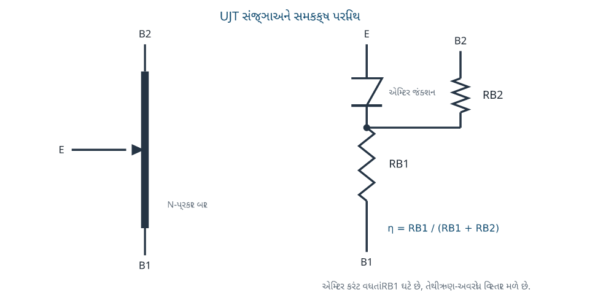

Q5 · Power devices, display and optical fibre
પ્ર.5 · પાવર ઉપકરણો, ડિસ્પ્લે અને ઓપ્ટિકલ ફાઇબર
Q.5 (a) List the applications of SCR and DIAC.3 marksQ.5 (a) · SCR અને DIACના ઉપયોગોની યાદી બનાવો.3 ગુણ
Applications of SCR:
- Controlled rectifiers and AC/DC power control circuits.
- Lamp dimmers, fan regulators and heater control.
- DC motor speed control and solid-state relays.
- Inverters, choppers and HVDC transmission.
- Battery chargers and regulated power supplies.
- Crowbar over-voltage protection and static switches.
Applications of DIAC:
- Triggering TRIACs in lamp dimmers and fan regulators (phase-control circuits).
- Relaxation oscillators and pulse generators.
- Starting circuits for thyristors and timing circuits.
- Surge and over-voltage triggered switching.
In a typical dimmer the DIAC is connected between the TRIAC gate and MT1: when the timing capacitor voltage reaches the DIAC breakover voltage, the DIAC conducts and delivers a gate pulse to the TRIAC.
SCRના ઉપયોગો:
- નિયંત્રિત રેક્ટિફાયર અને AC/DC પાવર કંટ્રોલ પરિપથ.
- લેમ્પ ડિમર, ફેન રેગ્યુલેટર અને હીટર કંટ્રોલ.
- DC મોટર ગતિ નિયંત્રણ અને સોલિડ-સ્ટેટ રિલે.
- ઇન્વર્ટર, ચોપર અને HVDC ટ્રાન્સમિશન.
- બેટરી ચાર્જર અને રેગ્યુલેટેડ પાવર સપ્લાય.
- ક્રોબાર ઓવર-વોલ્ટેજ પ્રોટેક્શન અને સ્ટેટિક સ્વિચ.
DIACના ઉપયોગો:
- લેમ્પ ડિમર અને ફેન રેગ્યુલેટરમાં TRIACને ટ્રિગર કરવા (ફેઝ-કંટ્રોલ પરિપથ).
- રિલેક્સેશન ઓસિલેટર અને પલ્સ જનરેટર.
- થાઇરિસ્ટરના સ્ટાર્ટિંગ પરિપથ અને ટાઇમિંગ પરિપથ.
- સર્જ અને ઓવર-વોલ્ટેજથી ટ્રિગર થતું સ્વિચિંગ.
સામાન્ય ડિમરમાં DIAC TRIACના ગેટ અને MT1 વચ્ચે જોડાય છે: જ્યારે ટાઇમિંગ કેપેસિટરનું વોલ્ટેજ DIACના બ્રેકઓવર વોલ્ટેજ સુધી પહોંચે ત્યારે DIAC વહન કરે છે અને TRIACને ગેટ પલ્સ આપે છે.
Q.5 (b) Describe the seven-segment display with its types.4 marksQ.5 (b) · સેવન સેગમેન્ટ ડિસ્પ્લેનું તેના પ્રકારો સાથે વર્ણન કરો.4 ગુણ
A seven-segment display is an arrangement of seven LED segments, labelled a to g, plus an optional decimal point (dp), placed in a figure-eight pattern. Different combinations of segments are lit to form the digits 0–9 and some letters. Each segment is an individual LED, so each one needs its own current-limiting resistor or a constant-current driver.
Types by connection:
- Common cathode: all cathodes are joined together to ground. A segment lights when its anode is driven HIGH through a resistor. The driver must source current.
- Common anode: all anodes are joined together to +VCC. A segment lights when its cathode is pulled LOW by the driver. The driver must sink current.
Other types: seven-segment displays are also made with liquid crystal (LCD) segments for low power, with more than one digit (multiplexed displays) and with integrated decoders. A BCD-to-seven-segment decoder/driver such as the 74LS47 (common anode) or 74LS48 (common cathode) converts a 4-bit BCD input into the seven segment drives; in a multiplexed display the same segment lines are shared and each digit is enabled in turn at high speed.
Segment patterns:
| Digit | Segments lit | Digit | Segments lit |
|---|---|---|---|
| 0 | a b c d e f | 5 | a c d f g |
| 1 | b c | 6 | a c d e f g |
| 2 | a b d e g | 7 | a b c |
| 3 | a b c d g | 8 | a b c d e f g |
| 4 | b c f g | 9 | a b c d f g |
Typical segment current is 5–20 mA, so a series resistor of a few hundred ohms is used with a 5 V supply; the exact value must be calculated from the LED forward voltage and the rated current. Applications include digital clocks, calculators, multimeters, counters and instrument panels.
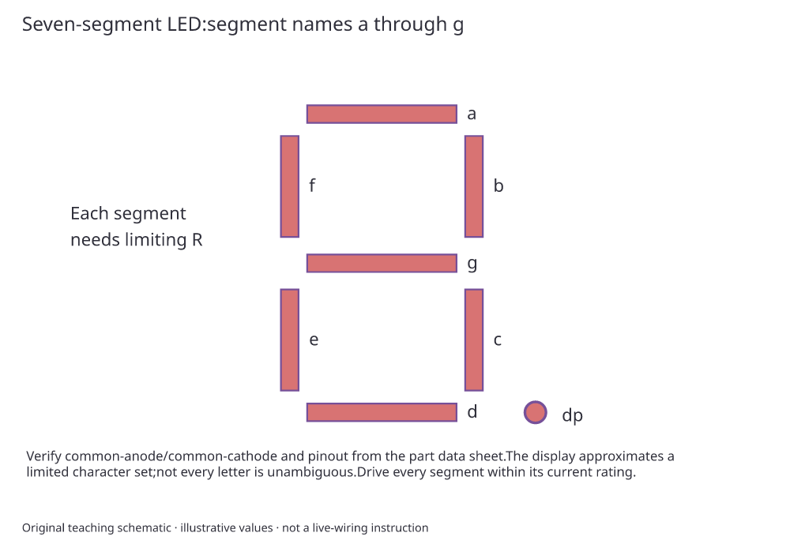
સેવન-સેગમેન્ટ ડિસ્પ્લે એ a થી g લેબલવાળા સાત LED સેગમેન્ટ અને વૈકલ્પિક દશાંશ બિંદુ (dp)ની આઠના આકારમાં ગોઠવણી છે. સેગમેન્ટના જુદા જુદા સંયોજનો પ્રગટાવીને 0–9 અંકો અને કેટલાક અક્ષરો દર્શાવાય છે. દરેક સેગમેન્ટ અલગ LED છે, તેથી દરેકને પોતાનું કરંટ-લિમિટિંગ રેઝિસ્ટર કે કન્સ્ટન્ટ-કરંટ ડ્રાઇવર જોઈએ.
જોડાણ પ્રમાણે પ્રકારો:
- કોમન કેથોડ: બધા કેથોડ એકબીજા સાથે ગ્રાઉન્ડ સાથે જોડાયેલા હોય છે. સેગમેન્ટનો એનોડ રેઝિસ્ટર દ્વારા HIGH કરતાં તે સેગમેન્ટ પ્રગટે છે. ડ્રાઇવરે કરંટ source કરવો પડે.
- કોમન એનોડ: બધા એનોડ એકબીજા સાથે +VCC સાથે જોડાયેલા હોય છે. ડ્રાઇવર સેગમેન્ટનો કેથોડ LOW કરે ત્યારે તે સેગમેન્ટ પ્રગટે છે. ડ્રાઇવરે કરંટ sink કરવો પડે.
અન્ય પ્રકારો: ઓછી શક્તિ માટે લિક્વિડ ક્રિસ્ટલ (LCD) સેગમેન્ટવાળા ડિસ્પ્લે, એક કરતાં વધુ અંકવાળા (મલ્ટિપ્લેક્સ્ડ) ડિસ્પ્લે અને ઇન્ટિગ્રેટેડ ડિકોડરવાળા ડિસ્પ્લે પણ બને છે. 74LS47 (કોમન એનોડ) કે 74LS48 (કોમન કેથોડ) જેવો BCD-થી-સેવન-સેગમેન્ટ ડિકોડર/ડ્રાઇવર 4-બિટ BCD ઇનપુટને સાત સેગમેન્ટ ડ્રાઇવમાં ફેરવે છે; મલ્ટિપ્લેક્સ્ડ ડિસ્પ્લેમાં એ જ સેગમેન્ટ લાઇન વહેંચાય છે અને દરેક અંક ઊંચી ઝડપે એક પછી એક ચાલુ કરાય છે.
સેગમેન્ટ પેટર્ન:
| અંક | પ્રગટતા સેગમેન્ટ | અંક | પ્રગટતા સેગમેન્ટ |
|---|---|---|---|
| 0 | a b c d e f | 5 | a c d f g |
| 1 | b c | 6 | a c d e f g |
| 2 | a b d e g | 7 | a b c |
| 3 | a b c d g | 8 | a b c d e f g |
| 4 | b c f g | 9 | a b c d f g |
સેગમેન્ટનો સામાન્ય પ્રવાહ 5–20 mA હોય છે, તેથી 5 V પુરવઠા સાથે થોડા સો ઓહ્મનું શ્રેણી રેઝિસ્ટર વપરાય છે; ચોક્કસ મૂલ્ય LEDના ફોરવર્ડ વોલ્ટેજ અને રેટેડ પ્રવાહ પરથી ગણવું જોઈએ. ઉપયોગોમાં ડિજિટલ ઘડિયાળ, કેલ્ક્યુલેટર, મલ્ટિમીટર, કાઉન્ટર અને સાધનોના પેનલનો સમાવેશ થાય છે.

Q.5 (c) Explain construction and working of a MOSFET.7 marksQ.5 (c) · MOSFETની રચના અને કાર્યપદ્ધતિ સમજાવો.7 ગુણ
MOSFET stands for metal–oxide–semiconductor field-effect transistor. It is a voltage-controlled device in which the gate voltage controls the drain current; the gate draws almost no steady current because it is insulated from the channel.
Construction (enhancement n-channel type): A lightly doped P-type silicon substrate (body) carries two heavily doped N+ regions, the source (S) and the drain (D). A very thin layer of silicon dioxide is grown over the channel region between S and D, and a metal or polysilicon gate (G) is deposited on the oxide. The oxide is an insulator, so the gate resistance is extremely high (1010–1015 Ω). The substrate is usually connected to the source, and a parasitic body diode exists between source and drain.
Working:
- VGS = 0: the two N+ regions are separated by the P-type body, which is equivalent to two back-to-back junctions. No channel exists, so the drain current is almost zero—the device is normally OFF.
- VGS > VT: the positive gate attracts electrons to the silicon surface under the oxide and forms an n-type inversion channel connecting the source and drain. The minimum gate voltage for this is the threshold voltage VT.
- With VDS applied: for small VDS the channel behaves as a voltage-controlled resistor and ID rises almost linearly with VDS (ohmic or triode region). As VDS increases the channel becomes narrower near the drain; at VDS = VGS − VT the channel pinches off.
- Saturation region: beyond pinch-off, ID becomes almost independent of VDS and is set mainly by VGS: approximately ID = k(VGS − VT)2. The device is used as an amplifier here; in the ohmic region it is used as a switch.
The transconductance gm = ΔID/ΔVGS expresses the control capability. Other members of the family are the p-channel MOSFET (polarities reversed), the depletion MOSFET (a built-in channel, which is ON at VGS = 0 and is turned off by a negative gate voltage) and power MOSFETs with a vertical structure.
Advantages, precautions and applications: very high input impedance, voltage control, fast switching and low drive power. The thin gate oxide is easily damaged by electrostatic discharge and gate over-voltage, so devices must be handled with grounded tools and stored in anti-static packaging. MOSFETs are used in CMOS digital logic, power switching, motor drives, amplifiers and voltage regulators.

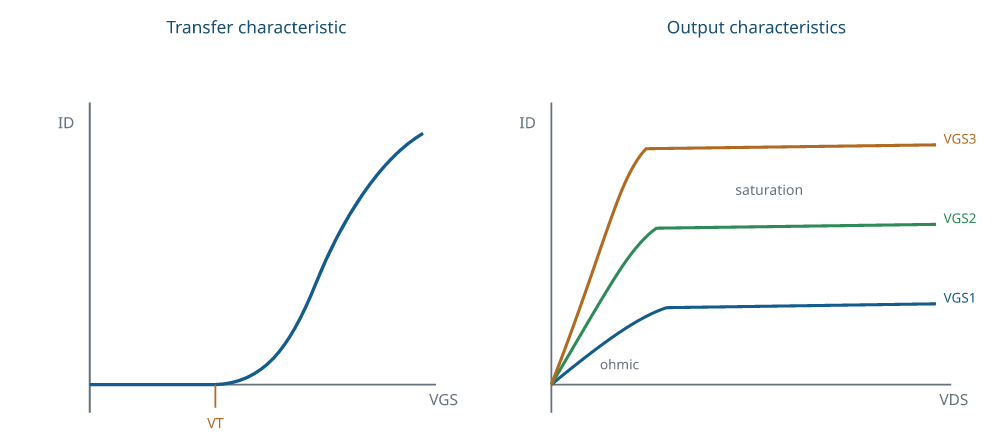
MOSFET એટલે metal–oxide–semiconductor field-effect transistor. તે વોલ્ટેજ-નિયંત્રિત ઉપકરણ છે, જેમાં ગેટ વોલ્ટેજ ડ્રેઇન પ્રવાહ નિયંત્રિત કરે છે; ગેટ ચેનલથી અવાહક હોવાથી તે લગભગ સ્થિર પ્રવાહ લેતું નથી.
રચના (એનહાન્સમેન્ટ n-ચેનલ પ્રકાર): હળવો ડોપ કરેલા P-પ્રકાર સિલિકોન સબસ્ટ્રેટ (બોડી) પર બે ભારે ડોપ કરેલા N+ પ્રદેશ—સોર્સ (S) અને ડ્રેઇન (D)—બનાવાય છે. S અને D વચ્ચેના ચેનલ પ્રદેશ પર સિલિકોન ડાયોક્સાઇડનું અતિ પાતળું સ્તર ઉગાડાય છે અને તેના પર ધાતુ કે પોલિસિલિકોનનો ગેટ (G) જમા કરાય છે. ઓક્સાઇડ અવાહક હોવાથી ગેટનો અવરોધ અતિ ઊંચો (1010–1015 Ω) હોય છે. સબસ્ટ્રેટ સામાન્ય રીતે સોર્સ સાથે જોડાય છે અને સોર્સ-ડ્રેઇન વચ્ચે પેરાસિટિક બોડી ડાયોડ રહે છે.
કાર્ય:
- VGS = 0: બે N+ પ્રદેશ P-પ્રકાર બોડીથી અલગ પડેલા હોય છે, જે પાછળ-પાછળ જોડાયેલા બે જંક્શન સમાન છે. કોઈ ચેનલ ન હોવાથી ડ્રેઇન પ્રવાહ લગભગ શૂન્ય—ઉપકરણ સામાન્ય રીતે OFF હોય છે.
- VGS > VT: ધન ગેટ ઓક્સાઇડ નીચે સિલિકોનની સપાટી પર ઇલેક્ટ્રોનને ખેંચે છે અને સોર્સ-ડ્રેઇનને જોડતી n-પ્રકાર ઇન્વર્ઝન ચેનલ બને છે. આ માટે જરૂરી લઘુત્તમ ગેટ વોલ્ટેજને થ્રેશોલ્ડ વોલ્ટેજ VT કહે છે.
- VDS લગાડતાં: નાના VDS પર ચેનલ વોલ્ટેજ-નિયંત્રિત અવરોધ જેવી વર્તે છે અને ID VDS સાથે લગભગ રેખીય રીતે વધે છે (ઓહ્મિક કે ટ્રાયોડ વિસ્તાર). VDS વધે તેમ ડ્રેઇન પાસે ચેનલ સાંકડી થાય છે; VDS = VGS − VT પર ચેનલ પિન્ચ-ઓફ થાય છે.
- સેચ્યુરેશન વિસ્તાર: પિન્ચ-ઓફ પછી ID VDS પર લગભગ આધાર રાખતો નથી અને મુખ્યત્વે VGS થી નક્કી થાય છે: આશરે ID = k(VGS − VT)2. અહીં ઉપકરણ એમ્પ્લિફાયર તરીકે અને ઓહ્મિક વિસ્તારમાં સ્વિચ તરીકે વપરાય છે.
ટ્રાન્સકન્ડક્ટન્સ gm = ΔID/ΔVGS નિયંત્રણ ક્ષમતા દર્શાવે છે. આ કુટુંબના બીજા પ્રકારોમાં p-ચેનલ MOSFET (ધ્રુવતા ઊલટી), ડિપ્લીશન MOSFET (પહેલેથી ચેનલ હોવાથી VGS = 0 પર ON અને ઋણ ગેટ વોલ્ટેજથી OFF) અને ઊભી રચનાવાળા પાવર MOSFETનો સમાવેશ થાય છે.
ફાયદા, સાવચેતી અને ઉપયોગો: ખૂબ ઊંચો ઇનપુટ અવરોધ, વોલ્ટેજ નિયંત્રણ, ઝડપી સ્વિચિંગ અને ઓછી ડ્રાઇવ શક્તિ. પાતળું ગેટ ઓક્સાઇડ ઇલેક્ટ્રોસ્ટેટિક ડિસ્ચાર્જ અને ગેટ ઓવર-વોલ્ટેજથી સહેલાઈથી બગડે છે, તેથી ઉપકરણો ગ્રાઉન્ડેડ સાધનોથી પકડવાં અને એન્ટિ-સ્ટેટિક પેકેજિંગમાં રાખવાં જોઈએ. MOSFETનો ઉપયોગ CMOS ડિજિટલ લોજિક, પાવર સ્વિચિંગ, મોટર ડ્રાઇવ, એમ્પ્લિફાયર અને વોલ્ટેજ રેગ્યુલેટરમાં થાય છે.
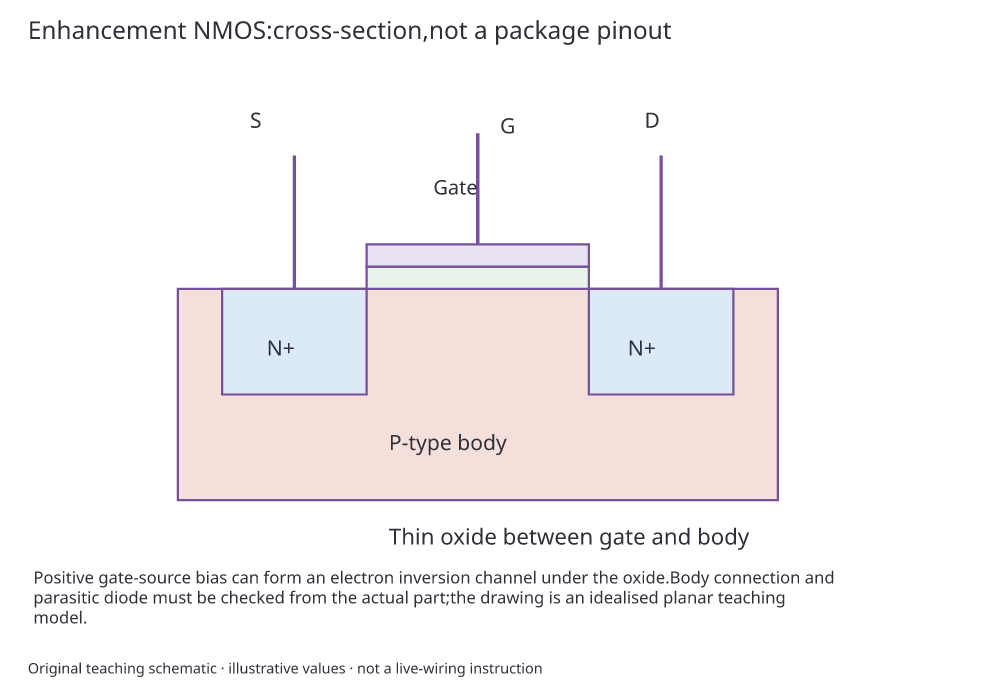
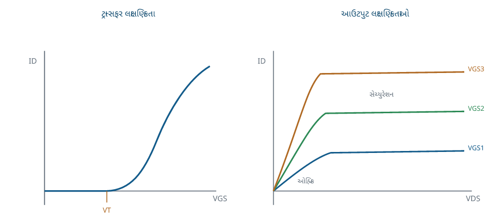
Q.5 (a) OR Draw the symbols of photodiode, TRIAC and LED.3 marksQ.5 (a) OR · ફોટોડાયોડ, TRIAC અને LEDની સંજ્ઞાઓ દોરો.3 ગુણ
Photodiode: the symbol is a diode with two arrows pointing towards the junction, showing incident light. The photodiode is normally operated in reverse bias; light creates electron–hole pairs and the reverse current increases with illumination.
TRIAC: the symbol is a pair of antiparallel diodes with a gate lead brought out from the junction near MT1. It has two main terminals MT2 and MT1 and one gate G, and it conducts in both directions after a gate trigger.
LED: the symbol is a diode with two arrows pointing away from the junction, showing emitted light. The LED is operated in forward bias and must always have a series current-limiting resistor.
The direction of the arrows is the key difference: arrows entering mean light input (photodiode), arrows leaving mean light output (LED), while the TRIAC symbol is recognised by its two antiparallel diode sections and the gate.
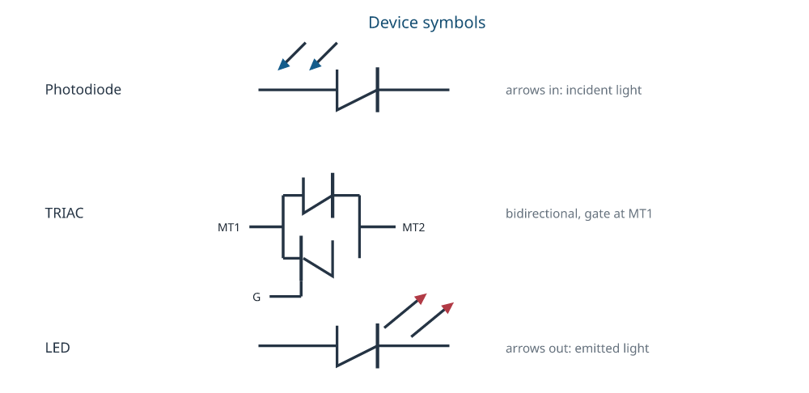
ફોટોડાયોડ: સંજ્ઞા એ ડાયોડ છે, જેમાં જંક્શન તરફ અંદર દિશામાં બે તીર હોય છે અને આપાત પ્રકાશ દર્શાવે છે. ફોટોડાયોડ સામાન્ય રીતે રિવર્સ બાયસમાં વપરાય છે; પ્રકાશ ઇલેક્ટ્રોન–હોલ જોડી બનાવે છે અને પ્રકાશની તીવ્રતા સાથે રિવર્સ પ્રવાહ વધે છે.
TRIAC: સંજ્ઞા એ એન્ટિપેરેલલ ડાયોડની જોડી છે, જેમાં MT1 પાસેના જંક્શનથી ગેટની લીડ બહાર આવે છે. તેમાં MT2 અને MT1 એમ બે મુખ્ય ટર્મિનલ તથા એક ગેટ G હોય છે અને ગેટ ટ્રિગર પછી તે બંને દિશામાં વહન કરે છે.
LED: સંજ્ઞા એ ડાયોડ છે, જેમાં જંક્શનથી બહાર દિશામાં બે તીર હોય છે અને ઉત્સર્જિત પ્રકાશ દર્શાવે છે. LED ફોરવર્ડ બાયસમાં વપરાય છે અને તેની સાથે હંમેશા શ્રેણી કરંટ-લિમિટિંગ રેઝિસ્ટર હોવું જોઈએ.
તીરની દિશા એ મુખ્ય તફાવત છે: અંદર આવતા તીર એટલે પ્રકાશ ઇનપુટ (ફોટોડાયોડ), બહાર જતા તીર એટલે પ્રકાશ આઉટપુટ (LED), જ્યારે TRIACની સંજ્ઞા તેના બે એન્ટિપેરેલલ ડાયોડ ભાગ અને ગેટ પરથી ઓળખાય છે.
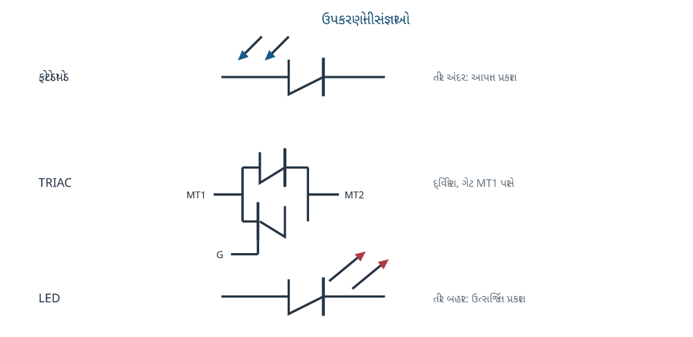
Q.5 (b) OR Explain construction and working of a TRIAC.4 marksQ.5 (b) OR · TRIACની રચના અને કાર્યપદ્ધતિ સમજાવો.4 ગુણ
Construction: A TRIAC (triode for alternating current) is a bidirectional thyristor with three terminals: two main terminals MT1 (or A1) and MT2 (or A2), and a gate G near MT1. It is formed as a five-layer N–P–N–P–N structure on a single silicon chip and behaves like two SCRs connected in inverse parallel with a common gate region. Because of this integrated construction it can conduct in both directions, unlike an SCR which conducts only from anode to cathode.
Working:
- When MT2 is positive with respect to MT1, the upper SCR section is forward biased. A gate pulse of suitable polarity triggers it into conduction.
- When MT2 is negative with respect to MT1, the lower SCR section is forward biased and a gate pulse again triggers conduction, now in the opposite direction.
- After firing, the device latches and the gate loses control. It turns off when the main current falls below the holding current, which happens naturally at the end of each AC half-cycle (natural commutation).
Thus the TRIAC can control the power delivered to a load during both half-cycles by adjusting the phase angle at which it is triggered. The gate trigger circuit usually uses a DIAC and an RC phase-shifting network, as in a lamp dimmer or fan regulator.
Ratings and applications: important ratings are the RMS on-state current IT(RMS), the repetitive peak off-state voltage VDRM, the gate trigger current and the permitted dv/dt and di/dt. TRIACs are used in lamp dimmers, fan regulators, AC motor speed controllers, heater controls, solid-state relays and domestic appliances. They are not suitable for very high-power or high-frequency applications, where two SCRs or other devices are preferred.
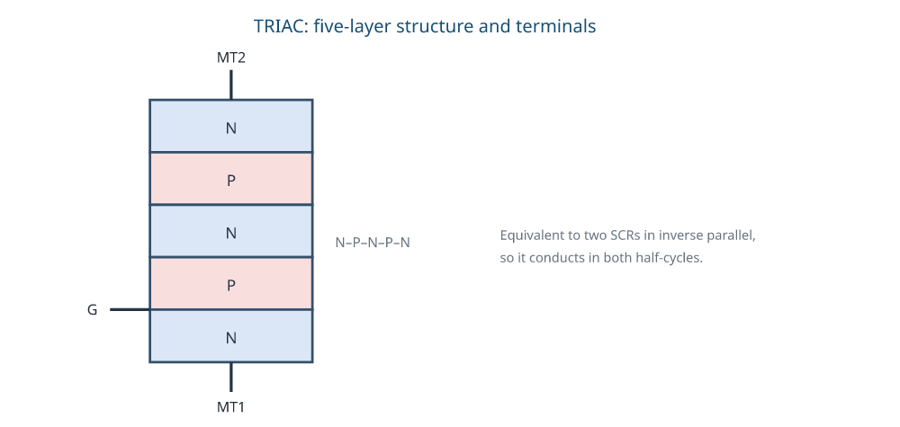

રચના: TRIAC (triode for alternating current) એ દ્વિદિશ થાઇરિસ્ટર છે, જેમાં ત્રણ ટર્મિનલ હોય છે: MT1 (અથવા A1) અને MT2 (અથવા A2) એમ બે મુખ્ય ટર્મિનલ તથા MT1 પાસે ગેટ G. તે એક જ સિલિકોન ચિપ પર પાંચ-સ્તરીય N–P–N–P–N રચના રૂપે બને છે અને સામાન્ય ગેટ પ્રદેશ સાથે ઇન્વર્સ પેરેલલમાં જોડાયેલા બે SCR જેવું વર્તે છે. આ ઇન્ટિગ્રેટેડ રચનાને કારણે તે બંને દિશામાં વહન કરી શકે છે, જ્યારે SCR ફક્ત એનોડથી કેથોડ તરફ વહન કરે છે.
કાર્ય:
- MT2 એ MT1ની સાપેક્ષે ધન હોય ત્યારે ઉપરનો SCR ભાગ ફોરવર્ડ બાયસમાં આવે છે. યોગ્ય ધ્રુવતાનો ગેટ પલ્સ તેને વહન માટે ટ્રિગર કરે છે.
- MT2 એ MT1ની સાપેક્ષે ઋણ હોય ત્યારે નીચેનો SCR ભાગ ફોરવર્ડ બાયસમાં આવે છે અને ગેટ પલ્સ ફરી વહન શરૂ કરે છે, હવે વિરુદ્ધ દિશામાં.
- ફાયર થયા પછી ઉપકરણ લેચ થાય છે અને ગેટનું નિયંત્રણ જતું રહે છે. મુખ્ય પ્રવાહ હોલ્ડિંગ કરંટ કરતાં નીચે જાય ત્યારે તે બંધ થાય છે, જે દરેક AC અર્ધચક્રના અંતે કુદરતી રીતે થાય છે (નેચરલ કમ્યુટેશન).
આમ TRIAC ટ્રિગર કરવાના ફેઝ એંગલને બદલીને બંને અર્ધચક્રમાં લોડને મળતી શક્તિ નિયંત્રિત કરી શકે છે. ગેટ ટ્રિગર પરિપથમાં સામાન્ય રીતે DIAC અને RC ફેઝ-શિફ્ટિંગ નેટવર્ક વપરાય છે, જેમ કે લેમ્પ ડિમર કે ફેન રેગ્યુલેટરમાં.
રેટિંગ અને ઉપયોગો: મહત્વનાં રેટિંગ RMS ઓન-સ્ટેટ પ્રવાહ IT(RMS), પુનરાવર્તી પીક ઓફ-સ્ટેટ વોલ્ટેજ VDRM, ગેટ ટ્રિગર પ્રવાહ તથા અનુમતિક dv/dt અને di/dt છે. TRIAC લેમ્પ ડિમર, ફેન રેગ્યુલેટર, AC મોટર ગતિ નિયંત્રક, હીટર કંટ્રોલ, સોલિડ-સ્ટેટ રિલે અને ઘરેલું ઉપકરણોમાં વપરાય છે. ખૂબ ઊંચી શક્તિ કે ઊંચી ફ્રિક્વન્સીના ઉપયોગ માટે તે યોગ્ય નથી; ત્યાં બે SCR કે બીજાં ઉપકરણો પસંદ કરાય છે.
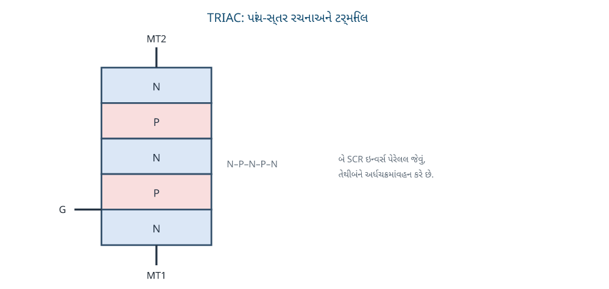
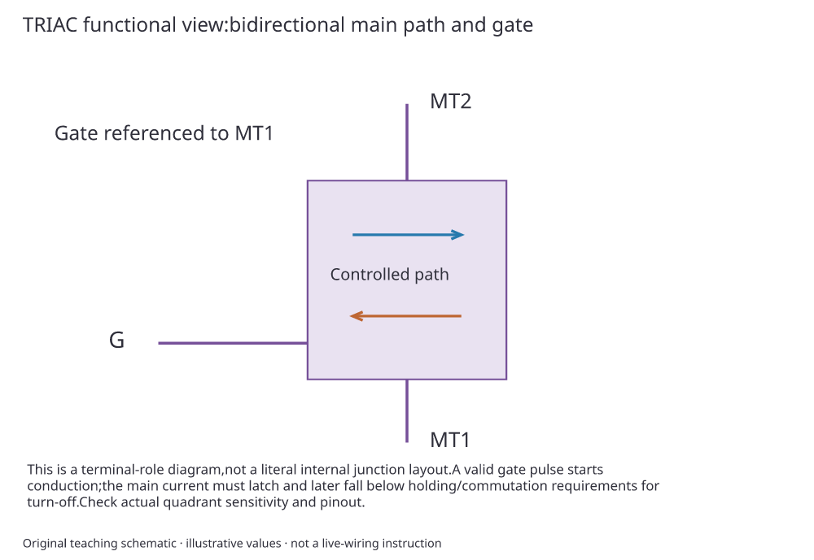
Q.5 (c) OR Describe the optical fibre cable in terms of construction, working principle and applications.7 marksQ.5 (c) OR · રચના, કાર્ય સિદ્ધાંત અને ઉપયોગોના સંદર્ભમાં ઓપ્ટિકલ ફાઇબર કેબલનું વર્ણન કરો.7 ગુણ
Construction: An optical fibre is a thin, flexible thread of glass or plastic that guides light. It consists of:
- Core: the central light-carrying region, made of high-purity silica glass or plastic with refractive index n1; its diameter is about 8–10 µm for single-mode fibre and 50–62.5 µm for multimode fibre.
- Cladding: a layer surrounding the core with a slightly lower refractive index n2 (n1 > n2), which confines the light to the core.
- Buffer/coating and jacket: protective plastic layers that give mechanical strength, protect against moisture and abrasion, and identify the fibre; strength members and an outer sheath form the complete cable.
Working principle—total internal reflection: when a light ray travelling in the denser core strikes the core–cladding boundary at an angle greater than the critical angle, it is reflected back into the core instead of being refracted out. The critical angle is
θc = sin−1(n2/n1)
Light entering the fibre within the acceptance cone is guided along the core by repeated total internal reflection, so it can travel long distances with very little loss. The light-gathering ability is expressed by the numerical aperture:
NA = √(n12 − n22)
Fibres are classified as step-index or graded-index according to the refractive-index profile, and as single-mode (small core, one propagation path, very high bandwidth and long distance) or multimode (larger core, many paths, used for shorter links). Attenuation in modern silica fibre is very low—about 0.2 dB/km at 1550 nm.
Advantages: enormous bandwidth, very low transmission loss, immunity to electromagnetic interference, no electrical short-circuit or spark hazard, high security against tapping, light weight and small size.
Applications: telecommunication and internet backbone networks, cable television, local area networks, undersea cables, fibre-optic sensors for temperature, strain and pressure, medical endoscopy and surgical illumination, industrial inspection and imaging, and military communication.

રચના: ઓપ્ટિકલ ફાઇબર એ કાચ કે પ્લાસ્ટિકનો પાતળો, લવચીક દોરો છે, જે પ્રકાશનું માર્ગદર્શન કરે છે. તેમાં નીચેના ભાગ હોય છે:
- કોર: પ્રકાશ વહન કરતો કેન્દ્રીય ભાગ, જે ઉચ્ચ શુદ્ધતાવાળા સિલિકા ગ્લાસ કે પ્લાસ્ટિકનો અને રિફ્રેક્ટિવ ઇન્ડેક્સ n1 ધરાવે છે; સિંગલ-મોડ ફાઇબરમાં તેનો વ્યાસ આશરે 8–10 µm અને મલ્ટિમોડમાં 50–62.5 µm હોય છે.
- ક્લેડિંગ: કોરને ફરતેનું સ્તર, જેનો રિફ્રેક્ટિવ ઇન્ડેક્સ n2 થોડો ઓછો (n1 > n2) હોય છે અને જે પ્રકાશને કોરમાં જ રોકે છે.
- બફર/કોટિંગ અને જેકેટ: યાંત્રિક મજબૂતી આપતા, ભેજ અને ઘર્ષણથી રક્ષણ કરતા તથા ફાઇબરની ઓળખ કરાવતા રક્ષણાત્મક પ્લાસ્ટિક સ્તર; સ્ટ્રેન્થ મેમ્બર અને બહારનું આવરણ મળીને પૂરું કેબલ બનાવે છે.
કાર્ય સિદ્ધાંત—સંપૂર્ણ આંતરિક પરાવર્તન: ગાઢ કોરમાં ચાલતો પ્રકાશ કિરણ કોર–ક્લેડિંગ સીમા પર ક્રિટિકલ એંગલ કરતાં મોટા ખૂણે પડે ત્યારે બહાર રિફ્રેક્ટ થવાને બદલે પાછો કોરમાં પરાવર્તિત થાય છે. ક્રિટિકલ એંગલ
θc = sin−1(n2/n1)
એક્સેપ્ટન્સ કોનની અંદર ફાઇબરમાં પ્રવેશતો પ્રકાશ વારંવાર સંપૂર્ણ આંતરિક પરાવર્તનથી કોરમાં માર્ગદર્શન પામે છે, તેથી તે ખૂબ ઓછા નુકસાન સાથે લાંબા અંતર સુધી જઈ શકે છે. પ્રકાશ એકત્ર કરવાની ક્ષમતા ન્યુમેરિકલ એપર્ચરથી દર્શાવાય છે:
NA = √(n12 − n22)
રિફ્રેક્ટિવ ઇન્ડેક્સ પ્રોફાઇલ પ્રમાણે ફાઇબરને સ્ટેપ-ઇન્ડેક્સ કે ગ્રેડેડ-ઇન્ડેક્સ અને સિંગલ-મોડ (નાનો કોર, એક જ માર્ગ, ખૂબ ઊંચી બેન્ડવિડ્થ અને લાંબું અંતર) કે મલ્ટિમોડ (મોટો કોર, ઘણા માર્ગ, ટૂંકી લિંક માટે) એમ વર્ગીકૃત કરાય છે. આધુનિક સિલિકા ફાઇબરમાં એટેન્યુએશન ખૂબ ઓછું—1550 nm પર આશરે 0.2 dB/km—હોય છે.
ફાયદા: ખૂબ મોટી બેન્ડવિડ્થ, ખૂબ ઓછું ટ્રાન્સમિશન લોસ, ઇલેક્ટ્રોમેગ્નેટિક ઇન્ટરફેરન્સથી મુક્તિ, વિદ્યુત શોર્ટ-સર્કિટ કે સ્પાર્કનું જોખમ નહીં, ટેપિંગ સામે ઊંચી સુરક્ષા, હલકું વજન અને નાનું કદ.
ઉપયોગો: ટેલિકમ્યુનિકેશન અને ઇન્ટરનેટ બેકબોન નેટવર્ક, કેબલ ટેલિવિઝન, લોકલ એરિયા નેટવર્ક, સમુદ્ર નીચેના કેબલ, તાપમાન–તાણ–દબાણ માપવા માટેના ફાઇબર-ઓપ્ટિક સેન્સર, તબીબી એન્ડોસ્કોપી અને શસ્ત્રક્રિયાની લાઇટિંગ, ઔદ્યોગિક નિરીક્ષણ તથા ઇમેજિંગ અને લશ્કરી સંચાર.